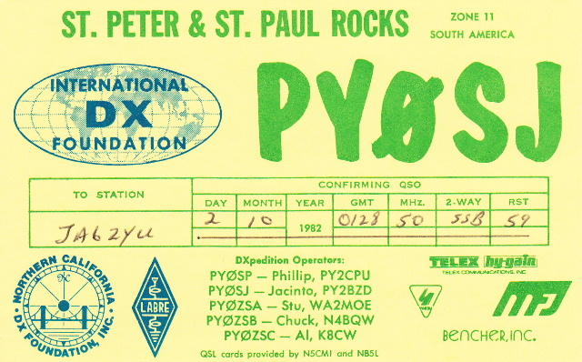
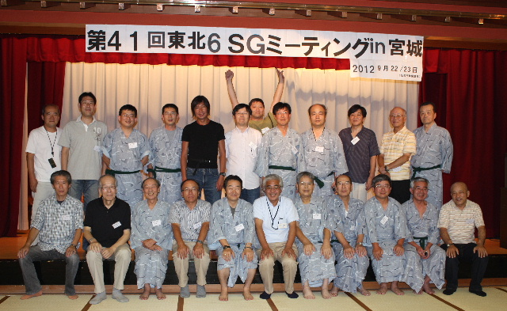

[Back Issues Nov.2012]
TIME:UTC(JST-09:00)
Report from JA1RJU(PM95sq)
30.Nov.2012(15:00b)
Report from JA1RJU(PM95sq)
29.Nov.2012(15:00b)
Report from JA1RJU(PM95sq)
28.Nov.2012(15:00b)
Report from JA1RJU(PM95sq)
23-27.Nov.2012(15:00b)
-------------------------------------------------------------------
Åù23.Nov-27.Nov.
SEANET CONVENTION 2012 (Kuala Lumpur Weat Malaysia=9M2)
-------------------------------------------------------------------
Report from JA1RJU(PM95sq)
22.Nov.2012(15:00c)
VK5ZK 03:49 50.140 SSB
VK3OER 03:48 50.106 CW
VK5ZK 03:49 50.105 CW
VK2AXB 03:51 50.110 SSB
VK5BC 03:52 50.110 SSB
VK5CZ 03:56 50.106 CW @
VK5ZK 03:57 50.106 CW CQ
VK4ZJB 04:02 50.110 SSB
VK4AMG 04:07 50.106 CW CQ
VK4WTN 04:09 50.103 CW CQ
VK4RGG/b 04:10- 50.058 CW Beacon
VK5CZ 05:25 50.102 CW
VK5PO 05:30 50.108 CW
V84SMD 05:50 50.101 CW UP weak
V84SMD 05:38 50.101 CW @ UP2
-------------------------------------------------------------------
Åù22.Nov-27.Nov.
SEANET CONVENTION 2012 (Kuala Lumpur Weat Malaysia=9M2)
-------------------------------------------------------------------
Report from JA1RJU(PM95sq)
21.Nov.2012(15:00b)
Report from JA1RJU(PM95sq)
20.Nov.2012(15:00b)
DU7/PA0HIP 08:45 50.110 CW CQ RST599
Report from JA1RJU(PM95sq)
19.Nov.2012(15:00b)
Report from JA1RJU(PM95sq)
18.Nov.2012(15:00c)
VK5PO 06:54 50.106 CW CQ DX
VK6RSX/b 07:45- 50.304 CW Beacon
Report from JA1RJU(PM95sq)
17.Nov.2012(15:00d)
V84SMD 04:30 50.130 SSB
V84SMD 04:50 50.130 SSB UP5-10
V84SMD 06:10 50.130 SSB CQ
V84SMD 07:15 50.130 SSB good sig!
DU1EV/B 07:25- 50.008 CW Beacon
V84SMD 07:30 50.130 SSB CQ/QRZ 5-10up
V84SMD 09:20 50.130 SSB still good RS59
Report from JA1RJU(PM95sq)
16.Nov.2012(15:00d)
V84SMD 03:59 50.130 SSB JA3/4 (weak in PM95)
V84SMD 04:14 50.130 SSB @ RS55 (into PM95 with QSB)
V84SMD 05:10 50.130 SSB still in but weak
DU1EV/B 07:55- 50.008 CW Beacon
DU7/PA0HIP 08:06 50.110 CW CQ RST599
Report from JA1RJU(PM95sq)
15.Nov.2012(15:00c)
VK4RTL/b 03:45- 50.282 CW Beacon RST579
DU1EV/B 08:00- 50.008 CW Beacon RST599
VK6RSX/b 09:40- 50.304 CW Beacon
Report from JA1RJU(PM95sq)
14.Nov.2012(15:00d)
LU5FF 01:15-02:05 50.100 CW CQ AS/JA1-2-3-0
VK4RGG/b 03:10- 50.058 CW Beacon RST599
VK4WTN 03:21 50.106 CW CQ RST599
VK4ZJB 03:24 50.120 CW CQ
VK4WM 03:29 50.104 CW CQ RST599
VK2WDD 03:35 50.110 SSB CQ
VK5BC 03:35 50.110/135 SSB CQ QSY
VK1DJA 03:36 50.125 SSB
VK3VG 03:39 50.125 SSB
VK2ZQ 03:42 50.130 SSB @ Mike
VK3OER 03:48 50.140 SSB
VK5ZK 03:49 50.140 SSB
VK3TCT 03:51 50.115 SSB
VK3DUT 03:52 50.110/145 SSB CQ QSY
VK3XQ 03:53 50.140 SSB CQ
VK3TCT 03:58 50.125 SSB @ John
FK8CP 04:01 50.128 SSB CQ
VK4ZJB 04:05 50.150 SSB
VK5BC 04:06 50.135 SSB CQ
VK4AFL 04:06 50.110 SSB CQ
FK8SIX/B 04:07- 50.080 CW Beacon RST599
VK2WDD 04:08 50.155 SSB
VK4AMG 04:09 50.107 CW
ZL1RS 04:13 50.103 CW
VK5ACY 04:16 50.156 SSB
VK4JAZ 04:17 50.156 SSB
VK5PO 04:21 50.110 CW CQ CQ
ZL1RS 04:24 50.103 CW CQ still good!
VK2ZT 04:46 50.130 SSB
Report from JA1RJU(PM95sq)
13.Nov.2012(15:00b)


PY0SJ 6m open to JA6 at 1982
Report from JA1RJU(PM95sq)
12.Nov.2012(15:00b)
Report from JA1RJU(PM95sq)
11.Nov.2012(15:00c)
DU1EV/B 08:00- 50.008 CW Beacon RST599
VK6RSX/b 09:14- 50.304 CW Beacon weak
Report from JA1RJU(PM95sq)
10.Nov.2012(15:00b)
Report from JA1RJU(PM95sq)
09.Nov.2012(15:00c)
FK8CP 03:05 50.110 CW CQ
FK8CP 05:13 50.110 CW CQ
Report from JA1RJU(PM95sq)
08.Nov.2012(15:00c)
FK8CP 03:55 50.110 SSB CQ
FK8CP 05:09 50.110 CW CQ
FK8CP 06:20 50.110 CW CQ
Report from JA1RJU(PM95sq)
07.Nov.2012(15:00c)
VK5BC 04:15 50.110 SSB CQ
VK5BC 04:38 50.110/125 SSB
Report from JA1RJU(PM95sq)
06.Nov.2012(15:00b)
Report from JA1RJU(PM95sq)
05.Nov.2012(15:00b)
Report from JA1RJU(PM95sq)
04.Nov.2012(15:00b)
Report from JA1RJU(PM95sq)
03.Nov.2012(15:00b)
Report from JA1RJU(PM95sq)
02.Nov.2012(15:00b)
Report from JA1RJU(PM95sq)
01.Nov.2012(15:00d)
VK4WTN 03:15 50.1055Å@ CW
VK4RGG/b 03:19- 50.058 CW Beacon
VK4WTN 03:24 50.110 SSB
VK2YO 03:48 50.110/160 SSB
VK2WDD 03:49 50.110/120 SSB RS59
VK4EK 04:06 50.110 SSB RS59
VK4WTN 04:08 50.110/145 SSB
VK4EK 04:10 50.110 SSB
VK4JIN 04:13 50.110 SSB
VK4XE 04:14 50.110 SSB
VK6KXW 05:27 50.110 CW CQ
VK6JR/m 05:29 50.110 CW CQ
VK6RPH/b 05:30- 50.066 CW Beacon
FK8SIX/b 05:30- 50.080 CW(FSK) Beacon
VK6JJ 05:39 50.110 CW CQ DX
VK4ZJB 05:42 50.110 SSB CQ
VK6RO 05:44 50.110 CW CQ
VK6OX 05:49 50.110 SSB
[Back Issues Oct.2012]
TIME:UTC(JST-09:00)
Report from JA1RJU(PM95sq)
31.Oct.2012(15:00c)
VK7RR/4 05:30 50.110 SSB
VK4CZ 05:32 50.160 SSB
VK7RR/4 05:38 50.120 SSB @ Brian RS59
DU1EV/B 06:00 50.008 CW Beacon
Report from JA1RJU(PM95sq)
30.Oct.2012(15:00d)
FK1TK 03:10 50.110/120 SSB CQ RS59
FK8CP 03:15 50.110 SSB
VK4AFU 03:19 50.098 CW
VK4XE 03:25 50.110/160 SSB
VK4HJ 03:29 50.104 CW
VK4RGG/b 03:29- 50.058 CW Beacon
FK8SIX/b 03:29- 50.080 CW Beacon(FSK)
VK4KR 03:47 50.110 SSB
VK2WDD 03:47 50.110/135 SSB
VK3AMK 03:50 50.135 SSB
VK6RSX/b 06:38- 50.304 CW Beacon
Report from JA1RJU(PM95sq)
29.Oct.2012(15:00c)
FK1TK 04:03 50.110/120 SSB CQ
Report from JA1RJU(PM95sq)
28.Oct.2012(15:00b)
FK8CP 02:42 50.110 CW CQ
--------------------------------------------------------------------
PY1RO 0236Z 50107.0 cw cq 519qsb JS6RGQ-9
CE1B/B 0259Z 50039.0 519 qsb JS6RGQ-9
A47RB/B 0729Z 50004.0 539 JS6RGQ-9
3B8DB 1030Z 50106.0 CQing JE6AZU-#
3B8DB 1030Z 50105.8 CW CQ JR6EXN
--------------------------------------------------------------------
Report from JA1RJU(PM95sq)
27.Oct.2012(15:00e)
ZL1NX 02:33 50.110 CW ZL-TV(45.24/25 strong!)
VK4RGG/b 03:15- 50.058 CW Beacon
VK4WQ 03:31 50.110/140 SSB
VK4AFL 03:41 50.110/177 SSB CQ and QSY
VK4BG 03:46 50.110/130 SSB QSO with DS4
VK4TIM 03:51 50.110 SSB
VK2FZR 03:57 50.110/125 SSB Brad RS59
VK4CDI 04:09 50.160 SSB @ Phil (ex VK2BYR)
VK2FZR 04:17 50.125 SSB
VK4WM 04:23 50.150 SSB
VK4CRO 04:26 50.120 SSB
VK4YH 04:27 50.120/130 SSB
VK5PO 04:30 50.107 CW CQ
DU7/PA0HIP 04:31 50.108 CW CQ
VK4ZP 04:33 50.165 SSB RS59
VK4CDI 05:15 50.110 SSB
VK4ZJB 06:08 50.110 SSB
Report from JA1RJU(PM95sq)
26.Oct.2012(15:00e)
VK4WTN 02:59 50.104 CW
FK8CP 03:00 50.110 CW CQ
FK8SIX/b 03:03- 50.080 CW Beacon
VK4RGG/b 03:03- 50.058 CW Beacon
VK4BIT 03:15 50.130 SSB
VK4AFU 03:18 50.160 SSB
VK4ZJB 03:19 50.125 SSB
VK4NE 03:25 50.110/140 SSB
VK4VI 03:27 50.130 SSB @ Tim RS59
VK4ACE 03:32 50.160 SSB
VK4BU 03:33 50.155 SSB
VK4AFU 03:39 50.160 SSB CQ
VK4WTN 03:44 50.096 RTTY
KH7Y 03:50 50.110 CW CQ
VK4ZJB 04:05 50.110 SSB CQ
KH7Y 04:08 50.1075 CW CQ
FK8CP 04:24 50.110 CW CQ
ZL1NW 05:30 50.150 SSB
ZL3ADT 05:32 50.120 SSB
VK4WTN 05:33 50.140 SSB
VK4ADC 05:33 50.176 SSB
VK4YH 05:34 50.176 SSB
ZL3ADT 05:35 50.120 SSB @ Ross RS59
ZL3THQ 05:43 50.125 SSB @ Roger RS59
ZL3NW 05:46 50.098 CW
ZL3JT 05:52 50.106 CW @ Dancan RST599
ZL3ADT 05:57 50.103 CW
VK4CMV 05:59 50.176 SSB
ZL3JT 06:03 50.110 CW CQ
ZL3JT 06:15 50.110 CW CQ
Report from JA1RJU(PM95sq)
25.Oct.2012(15:00f)
VK4WTN 02:08 50.106 CW
VK4RGG/b 02:09- 50.058 CW Beacon
E51CG 02:56 50.110 SSB @ Victor RS59
VK4AFL 03:01 50.110/177 SSB CQ
VK4WTN 03:05 50.110 SSB CQ Asia
VK4AHW/m 03:22 50.110/120 SSB 100W mobil
VK4NW 03:26 50.110 SSB CQ
E51CG 03:26 50.110 SSB CQ
VK4ZJB 03:37 50.160 SSB
VK2BHO 03:40 50.110 CW
9M6XRO 03:47 50.110 CW
VK4AHW/m 04:07 50.110 SSB
ZL2WHO/B 04:15- 50.024 CW Beacon
VK2IZI 05:12 50.122 SSB @ Neil
(ZL1NX 05:50 50.110 CW JA1)
VK4BIT 05:13 50.155 SSB
VK4CZ 05:19 50.101 CW
VK2BHO 05:25 50.103 CW
VK2FAD 05:27 50.130 SSB @ John
VK4WQ 05:30 50.135 SSB @ George
VK4YH 05:33 50.135 SSB @ Trevor
(ZL1RS 05:55 50.096 CW JA1.2)
AH0/N0AT 06:03 50.110 CW
VK4ZJB 06:06 50.110 SSB
DU7/PA0HIP 06:30 50.105 CW
KH7Y 06:37 50.105 CW @
VK4CZ 07:10 50.106 CW
KH7Y 07:12 50.105 CW CQ
VK4HJ 07:23 50.110 CW CQ
VK4TJ 07:27 50.110 CW
VK4BG 07:37 50.110 SSB
DU7/PA0HIP 07:38 50.110 CW
DU1EV/B 07:40 50.008 CW Beacon
FK8CP 09:15 50.110 CW CQ
P29VIM 12:20 50.103 CW weak
Report from JA1RJU(PM95sq)
24.Oct.2012(15:00d)
VK4MA 04:45 50.105 CW CQ
VK7RAE/b 04:48- 50.057 CW Beacon
VK4WTN 04:57 50.110 CW
VK7DX 05:05 50.110 SSB RS59
VK3DUT 05:12 50.110 SSB CQ
VK7DX 05:12 50.150 SSB
FK8CP 05:12 50.110 CW CQ
DU7/PA0HIP 05:39 50.110 CW CQ
VK4BG 12:03 50.110 SSB CQ
VK4WDM 12:04 50.110/125 SSB CQ
VK4RTL/b 12:08- 50.282 CW Beacon
VK4MA 12:15 50.110 CW CQ
Report from JA1RJU(PM95sq)
22.Oct.2012(15:00d)
T30SIX 02:45 50.102 CW CQ
T30SIX 03:00 50.102 CW CQ
FK8CP 03:00 50.110 CW/SSB CQ
FK8SIX/b 03:00- 50.080 CW Beacon(FSK)
T30SIX 03:10 50.115 SSB
E51WL 03:25 50.1055 CW *(ex ZK1WL/North Cook Is.)
E51WL 03:29 50.1055 CW @ UP1
E51WL 04:29 50.1055 CW F.Out(END)
VK6RSX/b 12:45- 50.304 CW Beacon
Report from JA1RJU(PM95sq)
21.Oct.2012(15:00c)
FK8CP 02:12 50.110 CW/SSB CQ
FK8SIX/b 02:30- 50.080 CW Beacon(FSK)
VK6RSX/b 07:55- 50.304 CW Beacon
VK6RSX/b 08:50- 50.304 CW Beacon
Report from JA1RJU(PM95sq)
20.Oct.2012(15:00d)
FK8HA 03:23 50.110 SSB
(T30SIX 03:25 50.115 SSB JA6(Nil in PM95)
(T30SIX 03:40 50.102 CW JA6(Nil in PM95)
VK7CW 03:40 50.105 CW
FK8SIX/b 03:40- 50.080 CW Beacon(FSK)
FK8GX 03:55 50.098 CW
T30SIX 04:07 50.102 CW CQ
T30SIX 04:30 50.102 CW CQ still in PM95
T30SIX 04:39 50.115 SSB
T30SIX 04:45 50.115 SSB @
VK6RSX/b 07:55- 50.304 CW Beacon
(3B9SP 08:50 50.095 CW in to JA6/5/4/?)
Report from JA1RJU(PM95sq)
19.Oct.2012(15:00e)
VK4MA 02:50 50.105 CW
VK4AJB 03:00 50.110 SSB
VK4RGG/B 03:00- 50.057 CW Beacon
VK4AMG 03:00 50.103 CW
T30SIX 03:07 50.110 CW CQ
T30SIX 03:09 50.102 CW QSY to 50.102
T30SIX 03:14 50.102 CW UP1
VK4LJ 03:32 50.102 CW
KH9/WA2YUN 03:33- 50.029 CW Beacon RST599 (QRH!)
T30SIX 03:48 50.102 CW CQing still good!
KH7Y 03:57 50.107 CW CQ
KH9/WA2YUN 04:00- 50.029 CW Beacon still RST599 !!
VK4AFL 04:59 50.110 SSB
VK4AMG 05:00 50.110/177 SSB
VK4BLK 05:01 50.110 SSB
DU7/PA0HIP 06:52 50.110 CW CQ
DU1EV/B 06:53- 50.008 CW Beacon
VK6RSX/b 12:50- 50.304 CW Beacon
DU1EV/B 12:50- 50.008 CW Beacon
Report from JA1RJU(PM95sq)
18.Oct.2012(15:00e)
VK4WTN 03:19 50.105 CW
VK4AMG 03:24 50.110/105 CW CQ
T30SIX 03:38 50.110 CW CQ
T30SIX 03:40 50.102 CW @ NW QSY Down
VK4AMG 03:54 50.103 CW CQ
VK4LM 04:12 50.110 SSB CQ
DU7/PA0HIP 06:46 50.110 CW
3W2BB 06:48 50.110/115 CW/SSB CQ
(3B9SP 09:39- 50.095 CW QSO with JA5/6)
VK6RSX/b 12:00- 50.304 CW Beacon
DU7/PA0HIP 12:35 50.105 CW CQ
DU1EV/B 12:35- 50.008 CW Beacon
DU7/PA0HIP 12:40 50.105 CW QSO with T6LG (T6=exYA)
DU1GM 12:47 50.105 CW Calling T6LG
VK8MS 12:49 50.105 CW QSO with T6LG
DU3/N0QM 13:30 50.108 CW CQ
DU7/PA0HIP 14:13 50.110 CW CQ
Report from JA1RJU(PM95sq)
17.Oct.2012(15:00c)
FK8SIX/b 02:30- 50.080 CW Beacon(FSK) RS599
FK8CP 02:30 50.110 CW/SSB
VK4WTN 02:40 50.107 CW
FK8CP 02:59 50.110 CW CQ
VK4WM 03:00 50.104 CW
T30SIX 04:55 50.110 SSB
3W2BB 05:02 50.115 CW/SSB
Report from JA1RJU(PM95sq)
16.Oct.2012(15:00e)
FK8SIX/b 01:55- 50.080 CW Beacon(FSK) RS599
FK8CP 01:55 50.110 CW/SSB CQ NA
VK4WTN 02:40 50.098 CW
FK8CP 02:41 50.110 CW CQ CQ
VK4RGG/b 02:45- 50.057 CW Beacon RST599
E51CG 02:56 50.110 SSB
VK4ZJB 02:58 50.110 SSB
VK4DX 03:02 50.105 CW
VK4AMG 03:56 50.110 CW CQ
T30SIX 04:50 50.115 SSB OP PY2XB
T30SIX 05:05 50.102 CW (Oct.16th-25th)
3W2BB 07:26 50.110 SSB CQ
3W2BB 08:00 50.115 SSB
Report from JA1RJU(PM95sq)
15.Oct.2012(15:00e)
FK8SIX/b 02:00- 50.080 CW Beacon(FSK) RS599
FK8CP 02:13 50.110 CW/SSB CQ NA
VK4WM 02:50 50.110 CW
FK8CP 02:51 50.110 CW
VK4MA 03:02 50.110 CW
VK7AC 03:04 50.110 CW/SSB
VK5PO 03:09 50.110 CW
VK7XX 03:14 50.110 SSB
FK8GX 03:25 50.110 CW
VK5DK 03:26 50.110/126 SSB
VK7CW 03:30 50.095 CW @
VK3AMK 03:33 50.1015 CW
VK4AMG 03:36 50.110 CW/SSB
VK4ZJB 03:48 50.110/135 SSB CQ
VK5JR 03:49 50.120 SSB
VK4AMG 03:50 50.120 SSB
VK5PO 03:54 50.120 SSB
VK4EK 03:54 50.120 SSB
VK5DK 03:59 50.115 SSB
FK8SIX/b 04:00- 50.080 CW Beacon(FSK) RS599
VK4WTN 04:00 50.103 CW
VK4AMG 04:00 50.106 CW
VK5JR 04:02 50.110 SSB
VK4DX 04:04 50.100 CW
VK4BG 05:10 50.110/120 SSB
3W2BB 05:19 50.116 SSB
DU1EV/b 06:30 50.008 CW Beacon
Report from JA1RJU(PM95sq)
14.Oct.2012(15:00b)
Report from JA1RJU(PM95sq)
13.Oct.2012(15:00b)
Report from JA1RJU(PM95sq)
12.Oct.2012(15:00d)
VK4MA 03:04 50.110 SSB CQ Asia
VK4MA 04:03 50.105 CW CQ DX
DU1EV/B 05:50- 50.008 CW Beacon RST599
DU7/PA0HIP 06:18 50.110 CW CQ DX
DU7/PA0HIP 06:45 50.110 CW CQ DX
DU3/N0QM 07:10 50.107 CW CQ
DU7/PA0HIP 07:34 50.110 CW CQ
VK4TVL/b 08:15- 50.2945 CW Beacon
VK6RSX/b 08:15- 50.304 CW Beacon
Report from JA1RJU(PM95sq)
11.Oct.2012(15:00d)
3W2BB 05:55 50.106 CW
VK9XM 06:04 50.103 CW
VK9XM 06:55 50.103 CW
DU3/N0QM 07:02 50.110 CW CQ
DU1EV/B 07:02- 50.008 CW Beacon
VK6RSX/b 08:55- 50.304 CW Beacon
Report from JA1RJU(PM95sq)
10.Oct.2012(15:00d)
3D2GC 04:40 50.100 CW
T88IK 08:11 50.127 SSB @ RS59+
VK6RSX/b 08:20- 50.304 CW Beacon
DU1EV/B 08:24- 50.008 CW Beacon
VK5PO 08:25 50.110/115 SSB CQ (QSY to 50.115)
VK3RMV/b 08:33- 50.294 CW Beacon
VK5BC 08:36 50.140 SSB
VK3ZAZ 08:44 50.1015 CW CQ DX
T88IK 08:50 50.127 SSB still RS59+
VK5JR 08:52 50.127 SSB calling JA2
N7ET/DU7 08:56 50.0975 CW CQ
VK5JR 08:57 50.150/130 SSB
VK5PO 09:05 50.130 SSB
VK4RTL/b 09:05- 50.282 CW Beacon
VK3OER 09:08 50.120 SSB CQ
VK6RSX/b 09:30- 50.304 CW Beacon
Report from JA1RJU(PM95sq)
09.Oct.2012(15:00c)
VK8VF/b 08:15- 50.310 CW Beacon
----------------------------------------------------------------
LU5FF 0058Z 50100.0 JH0INP
LU8MB 0102Z 50130.0 JH0INP
KH7Y 0106Z 50105.1 JH0INP
KH7Y 0107Z 50105.0 CW CQ JL8GFB-#
LU5FF 0111Z 50100.0 599 JR2HCB
LU8MB 0116Z 50130.0 59 JL8GFB-#
LU8MB 0118Z 50130.0 Tnx 59 JH7MQU-#
CE3AA 0118Z 50029.0 Beacon 559 JH7XRZ-#
CE3RR 0120Z 50110.0 SSB CQing JL8GFB-#
LU4HW 0127Z 50115.0 CQ JH7MQU-#
----------------------------------------------------------------
Report from JA1RJU(PM95sq)
08.Oct.2012(15:00b)
FK8CP 09:04 50.110 CW CQ DX
Report from JA1RJU(PM95sq)
07.Oct.2012(15:00d)
VK4BLK 05:14 50.110 CW CQ
VK6RSX/b 08:35 50.304 CW Beacon
Report from JA1RJU(PM95sq)
06.Oct.2012(15:00b)
Åù33rd All City & All Gun Contest(06.OctÅF2100JstÅ`07.OctÅF2100Jst)
Report from JA1RJU(PM95sq)
05.Oct.2012(15:00d)
FK8SIX/b 03:07- 50.080 CW Beacon(FSK) RS599
FK8CP 03:20 50.110 CW CQ DX
VK4BLK 03:43 50.107 CW
VK4ZJB 03:46 50.110 SSB
VK4AG 03:47 50.110 SSB
VK4WM 04:22 50.100 CW
VK4AMG 04:23 50.100 CW
VK4WTN 04:25 50.103 CW
VK4RO 04:26 50.130 SSB
VK4NE 05:44 50.160 SSB
VK4AFL 05:45 50.177 SSB
VK6RSX/b 05:48 50.304 CW Beacon
VK4AMG 05:49 50.195 SSB
VK4AMG 05:58 50.110/175 SSB CQ
FK8CP 09:25 50.110 CW CQ
VK6RSX/b 09:25- 50.304 CW Beacon
Report from JA1RJU(PM95sq)
04.Oct.2012(15:00e)
VK4WM 03:34 50.132 CW
VK4BLK 03:35 50.120/130 SSB
FK8SIX/b 03:35- 50.080 CW Beacon(FSK) RS599
FK8CP 03:37 50.115 SSB CQ
VK4RGG/b 03:40- 50.057 CW Beacon
VK4ZJB 03:55 50.110/135 SSB CQ DX QSY to 135/160
FK8CP 03:59 50.115 CW CQ DX RST599
VK4ZJB 05:39 50.110 SSB CQ
VK6KXW 05:46 50.110 CW CQ
VK4WM 06:17 50.115 CW
VK4WTN 06:42 50.105 CW CQ DX
VK4BLK 07:22 50.110 CW
FK8CP 07:49 50.110 CW CQ CQ
Report from JA1RJU(PM95sq)
03.Oct.2012(15:00c)
FK8CP 04:05 50.110 CW/SSB CQ
VK6RSX/b 07:50- 50.304 CW Beacon
DU1EV/B 07:50 50.008 CW Beacon
9M6XRO 09:02 50.110 CW CQ DX
FK8CP 09:24 50.110 CW CQ
VK6RSX/b 09:30- 50.304 CW Beacon
FK8CP 09:45 50.110 CW/SSB CQ
VK6RSX/b 12:00- 50.304 CW Beacon
Report from JA1RJU(PM95sq)
02.Oct.2012(15:00d)
3D2C 03:35 50.110 CW CQ
3D2C 03:40 50.110 SSB
E51CG 04:04 50.105 SSB
3D2C 06:00 50.110 SSB/CW
3D2C 09:00 50.110 SSB CQ CQ RS59
VK4RTL/b 09:55- 50.282 CW Beacon
VK6RSX/b 09:55- 50.304 CW Beacon
3D2C 10:10 50.110 CW/SSB CQ
VK4TVL/b 11:05- 50.295 CW Beacon
VK8VF/b 11:05- 50.310 CW Beacon
3D2C 11:10 50.110 SSB weak
VK6RSX/b 11:35- 50.304 CW Beacon
VK4TVL/b 11:36 50.295 CW Beacon
VK8MS 11:40 50.103 CW CQ
DU7/PA0HIP 12:18 50.110 CW CQ
VK4FNQ 12:37 50.110 SSB
VK8MS 12:39 50.110 SSB
9W6RT 13:00 50.110 SSB
VK8BW 13:01 50.110 SSB
Report from JA1RJU(PM95sq)
01.Oct.2012(15:00b)
VK4MW 03:57 50.102 CW CQ
[Back Issues Sep.2012]
TIME:UTC(JST-09:00)
Report from JA1RJU(PM95sq)
30.Sep.2012(15:00c)
----------------------------------------------------------------
ÅùOpen to South America from JA6
LU5FF 0310Z 50106.0 CW CQ QTF 95 JR6EXN
ZP5SNA 0303Z 50103.0 CW CQ JH6BPG-#
PY1RO 0258Z 50108.0 tnx qso JE6AZU-#
XE2YW 0238Z 50105.0 PLZ CW,SSB JE6AZU
ZP5SNA 0238Z 50103.0 CQ 559 JE6AZU-#
LU5FF 0234Z 50106.0 Cq 559 JE6AZU-#
LU5FF 0233Z 50110.5 Tnx qso JE6AZU-#
ZP5SNA 0158Z 50110.6 Tnx qso 519 JE6AZU-#
ZP5SNA 0152Z 50110.6 weak in/out JE6AZU-#
----------------------------------------------------------------
Report from JA1RJU(PM95sq)
29.Sep.2012(15:00d)
3D2C 08:41 50.110 CW CQ
3D2C 08:45 50.110 SSB RS59!
3D2C 09:28 50.110 CW
VK7RR/4 09:31 50.110 SSB CQ on 3D2C
3D2C 09:33 50.110 CW UP
3D2C 10:33 50.110 CW UP
DU7/PA0HIP 12:47 50.110 CW CQ
VK8MS 12:49 50.110 CW CQ
Report from JA1RJU(PM95sq)
28.Sep.2012(15:00e)
VK4WTN 03:47 50.105 CW
VK4WTN 03:51 50.110 SSB CQ
VK4TJ 03:54 50.100 CW CQ
VK4TJ 03:59 50.100 CW @ RST599/539
VK4EK 04:14 50.110 SSB CQ
VK4WM 05:17 50.103 CW CQ
VK6KXW 05:23 50.110 CW CQ
VK6OX 05:32 50.105 CW CQ
VK6KDX 05:35 50.125 SSB
VK6JJ 05:36 50.125 SSB
VK6JJ 05:39 50.100 CW CQ
VK6AKT 05:41 50.120 SSB
VK6RPH/b 05:44- 50.066 CW Beacon
VK6RSX/b 06:05- 50.304 CW Beacon
DU7/PA0HIP 07:41 50.105 CW CQ
3D2C 08:53 50.110 CW
3D2C 08:56 50.110 SSB RS59!
3D2C 09:41 50.110.5 CW
3D2C 09:53 50.110.5 CW @ UP4 RST599/599
3D2C 10:35 50.110.5 CW still into PM95
VK9XS 12:30 50.150 SSB UP20! (QSL to JA1PBV)
VK9XS 13:01 50.150 SSB @ UP16 RS59/59
9W6RT 13:22 50.115 SSB
Report from JA1RJU(PM95sq)
27.Sep.2012(15:00d)
VK6RSX/b 08:38- 50.304 CW Beacon
VK6RSX/b 09:15- 50.304 CW Beacon
VK4RTL/b 09:45- 50.282 CW Beacon
VK6RSX/b 12:45- 50.304 CW Beacon
VK4RTL/b 12:45- 50.282 CW Beacon
VK8VF/b 12:45- 50.310 CW Beacon
9W6RT 12:50 50.110/115 SSB
9M6YBG 12:57 50.110 CW CQ
VK9CS 12:58 50.110 CW CQ
VK9CS 13:01 50.120 CW @ RST579/599 (QSL to JA1PBV)
9M6YBG 13:30 50.110 SSB CQ
YB0AN 13:32 50.115 SSB CQ
9M6YBG 13:38 50.125 SSB CQ
DU7/PA0HIP 13:47 50.120 CW Calling VK9CS
DU7/PA0HIP 14:29 50.111 CW CQ
Report from JA1RJU(PM95sq)
26.Sep.2012(15:10e)
VK6RSX/b 08:30- 50.304 CW Beacon
3D2C 08:40 50.110 SSB Conway Reef (QSL via YT7AD)
3D2C 08:44 50.110 SSB @ Op.Peter (PY5CC=PP5XX)
3D2C 09:30 50.110 SSB still CQ CQ CQ !
VK4TL 09:31 50.110 CW CQ
3D2C 09:45 50.110 SSB CQ CQ CQ...
VK4TL 09:56 50.110 SSB/CW
3D2C 10:00 50.110 SSB still CQ
VK6RSX/b 12:35- 50.304 CW Beacon
9M6YBG 12:40 50.110 CW
VK4TL 12:41 50.110 CW QSO with 9M6YBG
DU7/PA0HIP 12:45 50.110 CW CQ
DU1EV/B 12:45- 50.008 CW Beacon RST599
VK4RTL/b 12:54- 50.282 CW Beacon
N7ET/DU3 13:25 50.097 CW
VK6KP 13:52 50.105 CW CQ
VK4RTL/b 13:55- 50.282 CW Beacon
VK6RSX/b 13:55- 50.304 CW Beacon
VK8VF/b 13:55- 50.310 CW Beacon
VK9CS 14:00 50.110 CW UP2-3
VK9CS 14:28 50.110 SSB
VK9CS 14:49 50.115 CW
DU7/PA0HIP 14:45 50.110 CW
9M6YBG 14:57 50.110 CW QSO with VK9CS
DU7/PA0HIP 15:07 50.105 CW CQ DX
Report from JA1RJU(PM95sq)
25.Sep.2012(15:00d)
VK6RSX/b 08:45- 50.304 CW Beacon
FK8CP 09:14- 50.110 CW CQ
FK8CP 09:33- 50.110 CW CQ DX RST599
DU7/PA0HIP 12:45 50.110 CW CQ
VK6RSX/b 12:45- 50.304 CW Beacon
YB0CBI 12:58 50.120 SSB
YB0MWM 13:19 50.120 SSB
YB0AN 13:20 50.120 SSB
YB0AN 13:37 50.120 SSB @ RS59/55
YB0CRT 13:38 50.120 SSB @ RS59/55
YB0CBI 13:39 50.120 SSB @ RS59/57
DU7/PA0HIP 13:59 50.105 CW CQ
VK6RSX/b 14:05- 50.304 CW Beacon
Report from JA1RJU(PM95sq)
24.Sep.2012(15:00b)
VK6RSX/b 09:20- 50.304 CW Beacon
Report from JA1RJU(PM95sq)
22-23.Sep.2012(15:00a)
Åù 2012 JA7-6SG Meeting in Miyagi

2012 JA7-6SG Meeting
Report from JA1RJU(PM95sq)
21.Sep.2012(15:00d)
T8XX 08:17 50.126 CW/SSB QSL via DL5AXX
DU1EV/B 09:09- 50.008 CW Beacon RST599
DU7/PA0HIP 09:09 50.105/110 CW CQ RST599
FK8CP 09:20- 50.110 CW CQ
FK8CP 09:35- 50.110 CW/SSB CQ
DU7/PA0HIP 11:37 50.110 SSB CQ RS59+
VK4JU 12:35 50.105 CW
VK6RSX/b 12:40- 50.304 CW Beacon RST559
Report from JA1RJU(PM95sq)
20.Sep.2012(15:00b)
VK6RSX/b 08:50- 50.304 CW Beacon
VK6KP 08:52 50.110 CW CQ RST599
Report from JA1RJU(PM95sq)
19.Sep.2012(15:00b)
9W6RT 08:34 50.110 SSB CQ
Report from JA1RJU(PM95sq)
18.Sep.2012(15:00b)
VK6RSX/b 06:05- 50.304 CW Beacon
Report from JA1RJU(PM95sq)
17.Sep.2012(15:00b)
Report from JA1RJU(PM95sq)
16.Sep.2012(15:00b)
NH8S(Swains Island DXpedition) QRT!
Update - 16-Sept-1000z.....As team rotation completed, the on-air operation from Swains Island
stopped at 0700 UTC Sunday, 16-Sept...After a good night's sleep,tear-down will begin tomorrow
morning in cooler (89deg) weather.....
It is a calm and relaxing time - the team is tired but very happy.....
They are receiving world-wide praise for an outstanding job of planning, execution, and on-air
operating technique.....Return boat arrives on Tuesday, 18-Sept -- everyone is wishing them a
safe return......The OQRS QSL system is now activated.....
Finals stats will be posted on the Statistics page.....
We hope you got them in the Log and had a FUN time with this DXpedition.....
73 from K6MM
Report from JA1RJU(PM95sq)
15.Sep.2012(00:00b)
Report from JA1RJU(PM95sq)
14.Sep.2012(15:00b)
Report from JA1RJU(PM95sq)
13.Sep.2012(15:00b)
VK4RTL/b 10:20- 50.282 CW Beacon
VK4AH 10:24 50.284 CW RST579
Report from JA1RJU(PM95sq)
12.Sep.2012(15:00b)
(NH8S 08:20- 50.107 CW Beacon Nil in PM95)
VK6RSX/b 09:20- 50.304 CW Beacon
Report from JA1RJU(PM95sq)
11.Sep.2012(15:00b)
E6M 08:10 50.110 CW/SSB S9 strong from AH51ba(OP.W7GJ)
E6M 08:30 50.110 SSB QRT for QRV EME
Report from JA1RJU(PM95sq)
10.Sep.2012(15:00b)
Report from JA1RJU(PM95sq)
09.Sep.2012(15:00d)
E6M 02:00 50.120 SSB weak OP.W7GJ
FK8CP 06:35 50.117 CW CQ
VK6RSX/b 06:40- 50.304 CW Beacon
C21BN 06:46 50.115 SSB weak(QSL JH1NBN)
C21BN 07:10 50.115 SSB UP5
C21BN 07:54 50.115 SSB @ UP5 RS55/55
FK8CP 08:50 50.110 CW CQ
9M2/JE1SCJ 09:05 50.123 CW weak
VK4WTN 09:10 50.106 CW
9W6RT 09:34 50.110 SSB CQ
VK4WM 09:37 50.101/110 CW CQ
VK4BG 09:41 50.110 SSB CQ
FK8CP 09:43 50.110 CW CQ
Report from JA1RJU(PM95sq)
08.Sep.2012(15:00c)
FK8CP 02:00 50.110 CW/SSB
VK6RSX/b 08:32- 50.304 CW Beacon weak
VK6RSX/b 08:45- 50.304 CW Beacon UP RST599
VK6XLR 09:04 50.110 SSB CQ RS56
VK4RTL/b 09:10- 50.282 CW Beacon
VK6BHY 09:16 50.116 SSB @ RS59
Report from JA1RJU(PM95sq)
07.Sep.2012(15:00d)
VK4WM 05:14 50.100 CW
VK4BLK 06:04 50.110 CW CQ DX
DU1EV/B 08:40- 50.008 CW Beacon RST599
DU7/PA0HIP 09:00 50.105 CW CQ RST599
Report from JA1RJU(PM95sq)
06.Sep.2012(15:00b)
VK4RTL/b 10:40- 50.282 CW Beacon
Report from JA1RJU(PM95sq)
05.Sep.2012(15:00e)
VK4AHW 03:54 50.110 SSB RS59
VK4WTN 03:55 50.130 SSB
VK4WM 03:59 50.130/135 SSB
VK4WM 04:13 50.105 CW
VK4DH 05:02 50.110/140 SSB @ RS59 David
VK4ZJB 05:07 50.110 SSB CQ
VK4WM 05:09 50.095 CW
VK4RGG/b 05:10- 50.058 CW Beacon RST599
FK8CP 05:27 50.117 CW/SSB RST 599 "CQ No Dupe"
VK4EK 05:36 50.170 SSB RS59+
VK4AHW 05:49 50.110/155 SSB CQ JA
VK4DH 06:00 50.140 SSB still RS59 GL=QG51
VK4AMG 06:16 50.110 SSB CQ DX
VK4WTN 08:41 50.106 CW
VK4BLK 09:19 50.110 CW CQ DX
VK4RTL/b 09:20- 50.282 CW Beacon
Report from JA1RJU(PM95sq)
04.Sep.2012(15:00b)
FK8CP 08:59 50.110 CW RST579
FK8CP 09:27 50.110 CW CQ CQ
Report from JA1RJU(PM95sq)
03.Sep.2012(15:00b)
Report from JA1RJU(PM95sq)
01-2.Sep.2012(15:00b)
34th KSSG Meeting Nagasaki 2012


[Back Issues.Aug.2012]
TIME:UTC(JST-09:00)
Report from JA1RJU(PM95sq)
31.Aug.2012(15:00c)
DU1EV/B 09:34 50.008 CW Beacon RST599
DU7/PA0HIP 09:54 50.105 SSB CQ RS59++
DU3/N0QM 10:15 50.107 CW CQ CQ RST599
VK4RTL/b 10:18 50.282 CW Beacon
VK4TL 10:20 50.284 CW RST599
Report from JA1RJU(PM95sq)
30.Aug.2012(15:00b)
DU7/PA0HIP 09:30 50.105 CW CQ RST599
DU1EV/B 09:35 50.008 CW Beacon
Report from JA1RJU(PM95sq)
29.Aug.2012(15:00b)
DU1EV/B 10:14 50.008 CW Beacon
DU7/PA0HIP 10:14 50.105 CW CQ RST599
Report from JA1RJU(PM95sq)
28.Aug.2012(15:00b)
DU7/PA0HIP 09:30 50.110/105 CW CQ RST599
Report from JA1RJU(PM95sq)
27.Aug.2012(15:00b)
VK4RTL/b 10:04- 50.282 CW Beacon
VK4WDM 10:08 50.110 SSB CQ RS56
Report from JA1RJU(PM95sq)
26.Aug.2012(15:00b)
BA4SI 07:56 50.115 SSB
HL2IFR 08:10 50.125 SSB
Report from JA1RJU(PM95sq)
25.Aug.2012(15:00b)
The Amateur Radio Festival 2012(Aug.25-26)
Report from JA1RJU(PM95sq)
24.Aug.2012(15:00b)
Report from JA1RJU(PM95sq)
23.Aug.2012(15:00b)
Report from JA1RJU(PM95sq)
22.Aug.2012(15:00b)
Report from JA1RJU(PM95sq)
21.Aug.2012(15:00b)
Report from JA1RJU(PM95sq)
20.Aug.2012(15:00b)
Report from JA1RJU(PM95sq)
19.Aug.2012(15:00b)
Report from JA1RJU(PM95sq)
18.Aug.2012(15:00b)
Report from JA1RJU(PM95sq)
17.Aug.2012(15:00b)
Report from JA1RJU(PM95sq)
16.Aug.2012(15:00b)
Report from JA1RJU(PM95sq)
15.Aug.2012(15:00c)
KG6DX 09:03 50.110 CW @ Joel RST599
KG6DX 09:36 50.110 CW CQ DX
Report from JA1RJU(PM95sq)
14.Aug.2012(15:00b)
Report from JA1RJU(PM95sq)
13.Aug.2012(15:00c)
VK4TL 09:35 50.110 SSB @ RS59
VK4RTL/b 09:40- 50.282 CW Beacon
VK4TL 10:06 50.110 SSB
BA4SI 10:06 50.110 SSB
Report from JA1RJU(PM95sq)
12.Aug.2012(15:00b)
Report from JA1RJU(PM95sq)
11.Aug.2012(15:00b)
Report from JA1RJU(PM95sq)
10.Aug.2012(15:00c)
VK6RSX/b 11:10- 50.304 CW Beacon
VK8VF/b 11:10- 50.310 CW Beacon
VK4RTL/b 11:20- 50.282 CW Beacon
VK6BHY 13:19 50.110 SSB CQ CQ
Report from JA1RJU(PM95sq)
09.Aug.2012(15:00b)
Report from JA1RJU(PM95sq)
08.Aug.2012(15:00b)
Report from JA1RJU(PM95sq)
07.Aug.2012(15:00b)
BV2DQ 08:22 50.110 SSB CQ
Report from JA1RJU(PM95sq)
06.Aug.2012(15:00b)
Report from JA1RJU(PM95sq)
05.Aug.2012(15:00c)
VK4AMG 06:16 50.150 SSB @ RS59 George
VK4WTN 06:17 50.165 SSB
VK4RTL/b 06:20- 50.282 CW Beacon
VK4CZ 06:34 50.140 SSB
VK4WTN 06:35 50.095 CW CQ
VK4DX 06:42 50.135 SSB @ RS59 Mike
VK4ZJB 06:47 50.130/135 SSB CQ
VK4XE 06:50 50.135 SSB
VK4WR 06:57 50.140 SSB
VK4AMG 07:07 50.100 CW CQ
VK4ZJB 07:11 50.110 SSB CQ DX
VK4ZJB 07:38 50.110 SSB CQ
VK4RTL/b 07:45- 50.282 CW Beacon still RST599
VK4TL 07:46 50.110 SSB CQ
6K13KJ 08:25 50.105 CW @ 13th Korea Jamboree (QSL via HL0CHD)
JG8NQJ/JD1 08:57 50.110 CW @
6K13KJ 09:05 50.105 CW CQ CQ
VK4FNQ 09:07 50.105 CW RST599 Calling 6K13KJ
VK4RTL/b 09:07- 50.282 CW Beacon
VK2OT 09:10 50.1015 CW @ RST599/559
Report from JA1RJU(PM95sq)
04.Aug.2012(15:00c)
BV2DQ 07:54 50.120 SSB
BV2DQ 08:00 50.095 RTTY CQ
VK8AW 12:13 50.110 SSB
Report from JA1RJU(PM95sq)
03.Aug.2012(15:00b)
VK6KP 08:36 50.110 SSB CQ
VK6RSX/b 08:43- 50.304 CW Beacon
Report from JA1RJU(PM95sq)
02.Aug.2012(15:00b)
Report from JA1RJU(PM95sq)
01.Aug.2012(15:00c)
VK6KP 09:35 50.110 SSB @ Rod RS59/58
VK6RSX/b 09:38- 50.304 CW Beacon
VK4TL 10:00 50.110 SSB CQ
[DX Report Jul.2012]
TIME:UTC(JST-09:00)
Report from JA1RJU(PM95sq)
31.Jul.2012(00:00a)
VK4TL 10:25 50.110 SSB
VK4RTL/b 12:00- 50.282 CW Beacon
Report from JA1RJU(PM95sq)
30.Jul.2012(15:00b)
Report from JA1RJU(PM95sq)
29.Jul.2012(15:00c)
BU2BE 08:04 50.120 SSB
BV9AYA 09:25 50.125 SSB CQ
Report from JA1RJU(PM95sq)
28.Jul.2012(15:00b)
Report from JA1RJU(PM95sq)
27.Jul.2012(15:00c)
VK4TL 09:20 50.110 SSB RS 59
VK4KEE 09:24 50.120 SSB @ Rob RS59 QH30
VK4RTL/b 09:25- 50.282 CW Beacon RST 599
VK4KEE 09:40 50.120 SSB CQ CQ
Report from JA1RJU(PM95sq)
26.Jul.2012(15:00c)
(K6FV/B 01:10- 50.069 CW Beacon JA8)
OE4VIE 08:10 50.086 CW @ CQ RST599
(4Z1UF 08:45 50.087 CW JA0)
Report from JA1RJU(PM95sq)
25.Jul.2012(15:00d)
BA8AG 01:40 50.102 CW CQ
LZ2WO 07:40 50.082/84 CW
LZ1QI 07:47 50.100 CW
(DL1YM 07:50 50.0988 CW JA8)
HA5JI 07:57 50.0854 CW
HA5JI 08:02 50.0805 CW @ RST579
IS0GQX 08:11 50.087 CW
HA0DU 08:16 50.091 CW CQ CQ
LZ2WO 08:22 50.085 CW
LZ2WO 08:30 50.085 CW CQ
LZ2WO 09:20 50.085 CW CQ CQ
LZ1QI 09:26 50.100 CW CQ
Report from JA1RJU(PM95sq)
24.Jul.2012(15:00b)
Report from JA1RJU(PM95sq)
23.Jul.2012(15:00b)
Report from JA1RJU(PM95sq)
22.Jul.2012(15:00e)
(K6FV/B 22:46 50.069 CW JA8)
KL7KY 23:20 50.097 CW weak
-----------------------------------------------------------
BA4SI 03:35 50.083 CW CQ TEST(WW VHF TEST)
HS5AC 05:05 50.108 CW TEST
HS5AR 05:10 50.095 CW TEST
HL3IUA 05:20 50.110 SSB Calling HS
DS4EOI 05:25 50.110 SSB Calling HS
SV1DH 05:30 50.102 CW into QM06
E2E 05:36 50.105 CW TEST
HS5AC 05:40 50.108 CW TEST
HL1VAU 05:52 50.108 CW Calling HS
(HS4AK 05:53 50.101 CW TEST)
DS1QMV 05:54 50.101 CW Calling HS
BA4SI 05:55 50.101 CW CQ TEST
HS5AR 06:19 50.110 SSB CQ
HS5AC 07:02 50.108 CW
HS5AC 07:30 50.108 CW @ TEST 599NK98
HS5AR 07:35 50.110 SSB CQ CQ
BA8AG 08:10 50.096 CW CQ TEST
E2E 08:50 50.115 CW
Report from JA1RJU(PM95sq)
21.Jul.2012(15:00d)
HS0AC 02:45 50.102 CW
KL7NO 05:00 50.105 CW
KL7KY 05:03 50.097 CW
KL7KY 05:19 50.097/099 CW @ UP 599/599
9M6YBG 05:24 50.110/106 CW CQ
HL2NF 05:30 50.094 CW
(N6JV 05:45 50.078 CW JA4)
(K6MYC 05:45 50.078 CW JA4)
BA4SI 05:48 50.106 CW
KL7KY 05:55 50.113 CW weak
BA4SI 06:25 50.106 CW CQ NA
KL7NO 06:30 50.106 CW RST599
KL7NO 06:44 50.116 SSB good!
HL1LUA 07:00 50.107 CW
HL1BDH 07:11 50.085 CW
KL7NO 07:22 50.115 SSB good!
BV3CH 07:40 50.120 SSB
OG2M 07:50 50.105 CW
HS0AC 08:00 50.102 CW UP 1-2
HS0AC 08:25 50.102 SSB UP 5
PC5C 08:29 50.086 CW
OH1XX 08:35 50.082 CW
HL1LUA 08:36 50.080 CW
DL5XJ 08:54 50.090 CW
OZ7YY 08:56 50.0864 CW
DL5XJ 09:06 50.0905 CW @
DJ9KG 09:10 50.0983 CW TEST(WW VHF TEST)RST+GL
Report from JA1RJU(PM95sq)
20.Jul.2012(15:00b)
(KA9CFD 22:21 50.097 CW JA7)
(K0HA 22:31 50.085 CW JA2)
(KA9CFD 23:27 50.087 CW JA1)
Report from JA1RJU(PM95sq)
19.Jul.2012(15:00b)
N7NW 06:00 50.089 CW
K7EX 06:06 50.097 CW
KL7KY/B 09:10- 50.0633 CW Beacon
HL4CHH 10:08 50.105 SSB CQ
Report from JA1RJU(PM95sq)
18.Jul.2012(15:00c)
(OZ1DJJ 07:54 50.079/101 CW JA3-6)
(OH3JR 08:49 50.102 CW JA3-4)
BA8AG 09:10 50.086 CW CQ
HL4CEL 09:25 50.105 CW CQ DX
HL5BMX 09:34 50.102 CW
BA8AG 09:44 50.099 CW
HL4CHH 09:50 50.105 CW
Report from JA1RJU(PM95sq)
17.Jul.2012(15:00c)
(LZ2WO 07:41 50.081 CW JA8)
(LZ1QI 07:31 50.100 CW JA8)
(OE4VIE 07:43 50.081 CW JA9)
(IT9RZR 07:47 50.092 CW JA2)
(HA8CE 07:45 50.085 CW JA8)
UN8GC 08:17 50.105 CW CQ
(IT9RZR 09:10 50.103 CW JA6)
LZ1QI 09:18 50.100 CW
(S59A 09:45 50.085 CW JA3-JA6
-----------------------------------------------------------------------
LZ2WO 0714Z 50081.9 hrd CQ JL8GFB-#
LZ1QI 0731Z 50100.0 599/599 JL8GFB-#
SV2DCD 0738Z 50080.5 CQ JA CQ JA JL8GFB-#
HA0DU 0740Z 50098.0 CQ 559 building JL8GFB-#
OE4VIE 0740Z 50080.9 cq JA9LSZ-#
HA8CE 0745Z 50085.0 loud JL8GFB-#
IT9RZR 0745Z 50091.1 PM85KEJM76MV HRD CQ JA2DDN
LZ1QI 0749Z 50080.0 JL8GFB-#
UN8GC 0811Z 50105.0 PM85KEMN83KF 599 JA2DDN
LZ1QI 0921Z 50100.0 CQ JA JL3IQE-#
LZ2WO 0929Z 50081.8 CQing JL3IQE-#
LZ2WO 0934Z 50082.0 JA6TEW-#
I4EAT 0939Z 50081.0 CQ JA5QJD
S59A 0948Z 50084.2 559 DRAGO JA5AUC
S59A 0947Z 50084.0 CQing JL3IQE-#
OZ5AQC 1022Z 50154.5 NOW JA5AQC
S59A 1043Z 50084.3 cqcq JA9LSZ-#
S59A 1050Z 50084.4 559 hRD JR2HCB
OE4XMS 1054Z 50081.1 hrd cq ja JA9LSZ-#
OE4XMS 1057Z 50081.1 JR2HCB
LZ2WO 1059Z 50082.0 CQ DX into QM07 JA7WSZ-9
OE4XMS 1100Z 50081.4 FB but... JH4IFF
OE4XMS 1113Z 50081.1 CQ JA JH4ADV-#
OE4XMS 1119Z 50081.5 TNX FB QSO MYGL:PM53IT JA6TEW-#
S59A 1120Z 50084.2 CQ JH4ADV-#
S59A 1122Z 50084.5 FB QSO TNX JA6TEW-#
HA8CE 1129Z 50082.0 JR2HCB
HA8CE 1129Z 50082.0 CQ JA loud JA7WSZ-9
SP7EXY 1136Z 50083.0 FB QSO TNX Cu Agn 73 JA6TEW-#
UT5UGR 1143Z 50086.0 CQ JA JA7WSZ
UT5URG 1147Z 50086.3 TNX FB QSO JA6TEW-#
UT5UGR 1150Z 50086.0 JR2HCB
DL9USA 1154Z 50103.5 JA6TEW-#
UT5UGR 1204Z 50086.1 TNX DMITRY JA5AUC
SP6GWB 1206Z 50102.3 FB Sig JA6TEW-#
HA5JI 1206Z 50087.5 TNX GEY JA5AUC
SP7EXY 1213Z 50083.0 559 JA5AUC
OK1MP 1222Z 50083.1 MILOS JA5AUC
OK1MP 1229Z 50083.3 JA6TEW-#
SP6GWB 1230Z 50102.0 TNX STAN JA5AUC
SP6GWB 1234Z 50102.0 JH6BPG-#
SP7EXY 1239Z 50088.1 TNX JA5AUC
Report from JA1RJU(PM95sq)
16.Jul.2012(15:00b)
Report from JA1RJU(PM95sq)
15.Jul.2012(15:00b)
BU2BE 07:04 50.110 SSB
Report from JA1RJU(PM95sq)
14.Jul.2012(15:00d)
KG6DX 07:12 50.101 CW
SP2MPO 09:23 50.103 CW
HL1VAU 09:49 50.095 CW CQ
PC5C 09:55 50.0806 CW
DL9USA 09:58 50.107 CW
(LX1NO 10:14 50.090 CW JA2)
PA2M 10:15 50.103 CW
PF7M 10:21 50.083 CW
ON4IQ 10:36 50.099 CW
ON4IQ 10:55 50.099 CW
PA4FHF 10:56 50.103 CW
(ON7GB 11:42 50.106 CW JA2)
Report from JA1RJU(PM95sq)
13.Jul.2012(15:00b)
Report from JA1RJU(PM95sq)
12.Jul.2012(15:00b)
Report from JA1RJU(PM95sq)
11.Jul.2012(15:00b)
Report from JA1RJU(PM95sq)
10.Jul.2012(15:00b)
Report from JA1RJU(PM95sq)
09.Jul.2012(15:00b)
Report from JA1RJU(PM95sq)
08.Jul.2012(15:00b)
DS2CYS 03:25 50.135 SSB
BV1EL 03:25 50.135 SSB
HL2CFY 03:58 50.102 CW
Report from JA1RJU(PM95sq)
07.Jul.2012(15:00b)
DS4EOI/2 02:57 50.081 CW CQ
Report from JA1RJU(PM95sq)
06.Jul.2012(15:00b)
Report from JA1RJU(PM95sq)
05.Jul.2012(15:00b)
Report from JA1RJU(PM95sq)
04.Jul.2012(15:00b)
Report from JA1RJU(QM06cb)
03.Jul.2012(15:00b)
BV4SI 23:02 50.106 CW CQ NA
---------------------------------------------------------------
HL4CEL 00:12 50.106 CW CQ
HL4CCM 00:20 50.106 CW
Report from JA1RJU(QM06cb)
02.Jul.2012(15:00b)
ER1LW 06:18 50.096 CW CQ
OE4VIE 06:35 50.082 CW CQ
OE4VIE 06:49 50.082 CW @ RST579
S57TW 06:54 50.097 CW
S57TW 07:10 50.097 CW @
OE4VIE 07:13 50.082 CW
HL3IUA 07:14 50.082 CW
9A4K 07:16 50.098 CW
9A4K 07:27 50.0985 CW @ RST599/599
S59A 07:46 50.0976 CW CQ
LZ2WO 07:58 50.096 CW
LZ2WO 08:18 50.096 CW @ RST579
LZ1QI 08:22 50.085 CW CQ
LZ1QI 08:30 50.085 CW
LZ2WO 08:45 50.086 CW CQ
Report from JA1RJU(PM95sq)
01.Jul.2012(15:00d)
KH0XG 04:57 50.120 SSB TINIAN
KH0XG 05:02 50.120 SSB @ RS59
(YO9HP 05:01 50.098 CW JA8)
(YT9A 05:13 50.084 CW JA8)
JE2LPC/BY5CD 05:10 50.115 CW @ RST599
LZ1QI 06:01 50.096 CW
LZ2HM 06:43 50.097 CW weak QSB
DS4EOI/2 07:09 50.081 CW CQ EU
HL1LUA 07:25 50.108 CW
HL1BDH 07:47 50.084 CW CQ EU
Å@ BD4KYA 07:59 50.123 SSB CQ
DU1EV/B 09:50 50.008 CW
[Back Issues Jun.2012]
TIME:UTC(JST-09:00)
Report from JA1RJU(PM95sq)
30.Jun.2012(15:00c)
BA4SI 23:33 50.105 CW
HL1BDH 23:35 50.095 CW
DS2XUM 23:36 50.108 CW
---------------------------------------------------------------
(LA9DFA 04:55 50.093 CW JA8)
(OE4VIE 05:05 50.089 CW JA8)
HL2UVH 07:52 50.085 CW
(OH3XR 08:47 50.097 CW JA2.3)
(OH1LEU 09:15 50.095 CW JA6)
(F8DFP 09:39 50.025 CW JA3)
(F5BZB 09:55 50.084 CW JA1)
(OG2M 09:55 50.084 CW JA1)
Report from JA1RJU(PM95sq)
29.Jun.2012(15:00d)
OH1XT 22:50 50.097 CW
BA4SI 23:15 50.106 CW CQ
OH8UV 23:38 50.090 CW
(OH6WW 23:48 50.098 CW JA0)
SK2AT 23:50 50.085/50.097 CW
---------------------------------------------------------------
OH1XT 00:00 50.097 CW CQ
OH1XT 00:04 50.097 CW @ RST579
(UX2HO 04:40 50.0895 CW JA8)
(LA8AJA 04:53 50.084 CW JA8)
SM2A 05:04 50.086 CW @
SM3GSK 05:11 50.092 CW @
OH3XR 05:35 50.1087 CW @
SG3U 05:43 50.088 CW @
OH1UM 05:48 50.0996 CW
SM5FVH 06:27 50.092 CW @ RST579
SM5SDX 06:34 50.0945 CW @
OH1XT 06:36 50.097 CW
OH2ZZ 06:38 50.084 CW @ RST579
OH1XX 06:43 50.0826 CW @ RST579
OH2ZZ 06:45 50.0846 CW @
UT7QF 06:55 50.0983 CW @
OH7UE 07:07 50.0878 CW @ RST599
OH4MDY 07:16 50.092 CW @
OH1XT 07:18 50.0973 CW CQ
OH8LQ 07:38 50.092 CW
OH4MDY 07:42 50.092 CW
OH1XT 07:43 50.0972 CW CQ
OH6CT 08:13 50.084 CW @ RST599
OH8UV 08:15 50.089 CW CQ
PA2M 08:17 50.092 CW CQ
PC7M 08:44 50.083 CW
PA2M 08:55 50.0936 CW @ RST579
PC5C 09:04 50.099 CW @
Report from JA1RJU(PM95sq)
28.Jun.2012(15:00b)
SP7EXY.4Z1UF.SV1DH.4X4DK.etc CW
05:40-08:27 CW JA8)
BA4SI 09:30 50.105 CW CQ
N7ET/DU7 09:34 50.110 CW CQ CQ
Report from JA1RJU(PM95sq)
27.Jun.2012(15:00b)
(4Z1UF 06:00 50.084 CW JA8)
(UX7LT 07:14 50.097 CW JA8)
(LZ2DF 07:47 50.080 CW JA8)
Report from JA1RJU(PM95sq)
26.Jun.2012(15:00c)
DS4DBS 04:50 50.100 RTTY
4Z1UF 06:35 50.087 CW
4Z1UF 06:37 50.0873 CW @ RST559 QSB
HL1BDH 06:48 50.097 CW
HL4CCM 07:16 50.085 CW
SV1DH 07:50 50.102 CW
4Z1UF 08:00 50.0873 CW CQ JA RST559-579
SV8MQP 08:36 50.082 CW
BA4MY 08:55 50.0958 CW CQ
4Z1UF 09:03 50.0873 CW CQ JA UP1
Report from JA1RJU(PM95sq)
25.Jun.2012(15:00c)
BY8AC 01:45 50.102 CW CQ
BY8AT 02:04 50.105 CW @ RST599
BA8AG 05:10 50.099 CW
BH4SQE 05:13 50.096 CW CQ
Report from JA1RJU(PM95sq)
24.Jun.2012(15:00d)
BA4SD 00:53 50.091 CW
HL4CHH 02:21 50.101 CW
BA4SD 02:23 50.091 CW CQ
DS4DBF 02:50 50.100 (RTTY) CQ
DS4DBF 03:02 50.105 CW
BA4SI 09:29 50.107 CW
BD8ASG 09:31 50.107 CW CQ
BD8ASG 09:52 50.107 CW @ RST599
Report from JA1RJU(PM95sq)
23.Jun.2012(15:00e)
BD4KYA 00:39 50.120 CW CQ JA6/JA8 Es strong!
BM3GFU 00:40 50.120 CW
HL2WP 00:50 50.101 CW CQ
BU2AV 00:52 50.096 CW
BY8AC 01:39 50.101 CW CQ
HL1LUA 01:42 50.105 CW
DS5TOS 02:38 50.150 SSB
DS2KGJ 02:39 50.163 SSB
HL4CHH 02:43 50.102 CW/SSB CQ
BA4SD 05:44 50.105 CW
DS4EOI/2 06:33 50.098 CW CQ DX
6K5BHZ 07:26 50.101 CW
HL2WP 07:30 50.112 CW CQ
BA1KW 08:37 50.104 CW CQ
BA4SI 08:42 50.104 CW
BA4SD 08:44 50.104 CW
BA1KW 09:01 50.104 CW @
BG4NMT 09:03 50.102 CW
BA7IO 09:03 50.096 CW
DS4EOI/2 09:04 50.098 CW CQ
Report from JA1RJU(PM95sq)
22.Jun.2012(15:00b)
Report from JA1RJU(PM95sq)
21.Jun.2012(15:00b)
Report from JA1RJU(PM95sq)
20.Jun.2012(15:00c)
BD4KYA 03:32 50.120 CW
UN8GC 04:05 50.106 CW
Report from JA1RJU(PM95sq)
19.Jun.2012(15:00c)
BA4MY 06:13 50.100 CW CQ
S57RR 07:02 50.096 CW
UK9AA 08:06 50.096 CW
LZ2WO 08:05 50.096 CW
DS1LET 08:17 50.096 CW
BA4MY 08:19 50.096 CW
BA4SI 08:35 50.101 CW
Report from JA1RJU(PM95sq)
18.Jun.2012(15:00b)
Report from JA1RJU(PM95sq)
17.Jun.2012(15:00c)
AH0I 01:44 50.115 CW @ CQ RST599
AH0I 02:28 50.115 SSB @ OP.JF1IRW
AH0I 05:17 50.115 CW CQ CQ
Report from JA1RJU(PM95sq)
16.Jun.2012(15:00b)
AH0I 08:52 50.115 CW/SSB weak
AH0I 09:14 50.115 SSB CQ QSB
Report from JA1RJU(PM95sq)
15.Jun.2012(15:00b)
BV2DQ 01:22 50.105 CW CQ
BX4AG 01:45 50.110 CW
Report from JA1RJU(PM95sq)
14.Jun.2012(15:00b)
Report from JA1RJU(PM95sq)
13.Jun.2012(15:00d)
--------------------------------------------------------------------
KD2JA 2323Z 50087.0 559/559 I'm QSY on 50097.5 JL8GFB-#
CQ NA 2314Z 50087.0 N4WW,K4MM still open JL8GFB-#
K4PI 2305Z 50087.9 cq tnx qso JA4DND
K4PI 2258Z 50088.0 CQing 559 JR2HCB
K4PI 2254Z 50088.0 579/559 JL8GFB-#
VE2DLC 2248Z 50087.0 tu call still Opening !! JL8GFB-#
VY2ZM 2244Z 50080.8 I'm call tu HL3IUA-#
VY2ZM 2238Z 50087.0 I,m Call TU HL3IUA-#
VE9AA 2227Z 50087.0 599/449 tu call JL8GFB-#
VY2ZM 2223Z 50080.8 JH1GUL (QTH VE2=P.E Island)
VY2ZM 2213Z 50080.7 JA9LSZ-#
VY2ZM 2202Z 50085.1 QM05<>FN86 JE1BMJ
--------------------------------------------------------------------
LZ2WO 07:13 50.085 CW
EA7PM 08:05 50.084 CW
CT1HZE 08:14 50.085 CW
(CN8KD 08:25 50.084 CW JA8)
CN8KD 08:40 50.084 CW
CT1HZE 09:04 50.0855 CW
--------------------------------------------------------------------
CT1HZE 0914Z 50085.0 CQ JA 579 I'm on 50.097.5 CQ JL8GFB-#
CT1HZE 0902Z 50084.8 cqing JA1WLO-#
CT1FJK 0852Z 50083.4 CQ JA CQ JA JL8GFB-#
CT1EKY 0843Z 50087.0 CQ vCQ JL8GFB-#
CN8KD 0841Z 50084.0 JR2HCB
CN8KD 0840Z 50084.0 JH0INP
CT1HZE 0838Z 50085.0 vy loud sigs JL8GFB-#
CN8KD 0833Z 50084.0 correct QRG JL8GFB-#
CT1HZE 0828Z 50085.0 cqn. 559 JA1WLO-#
CN8KD 0825Z 50085.0 Wao TU New One !! JL8GFB-#
YO8MI 0817Z 50095.0 CQ JL8GFB-#
CT1HZE 0815Z 50085.0 529 JA pile JL8GFB-#
EA7RM 0800Z 50084.0 CQ 569 JL8GFB-#
EA5FX 0801Z 50088.0 tu JL8GFB-9
EA5FX 0759Z 50088.0 tu JL8GFB-#
EA7DUD 0757Z 50092.0 fb sigs JL8GFB-#
YO8ZY 0749Z 50098.4 called on top SP7AWG wkd both JL8GFB-#
SP7AWG 0743Z 50098.4 pse cpy JL8GFB-#
EA7RM 0743Z 50083.8 JH0INP
EA7RM 0737Z 50083.8 559 JR2HCB
EA7RM 0733Z 50083.8 539.... JL8GFB-#
DK2PH 0719Z 50092.6 599! JR2HCB
EA3GP 0717Z 50072.0 559 FB tnx JA3EGE-#
OH7RJ 0716Z 50099.0 559 HRD JR2HCB
ON4GG 0713Z 50095.3 559 CQ JR2HCB
DK2PH 0705Z 50094.0 JO TKS JA3EGE-#
ON4GG 0701Z 50095.0 559 TKS JA3EGE-#
SP5CFD 0657Z 50099.0 559 HRD JR2HCB
F6ARC 0654Z 50087.0 Try here PSE JL8GFB-#
EA3DT 0645Z 50090.0 in QSO getting loud JL8GFB-#
EA7AH 0644Z 50088.0 VY QSB JA5QJD
EA7AH 0642Z 50087.0 559 FB JA3EGE-#
EA3DT 0635Z 50090.0 539 cant hear me ... JL8GFB-#
EA3AKY 0626Z 50097.1 579 no takers JL8GFB-#
---------------------------------------------------------------------
Report from JA1RJU(PM95sq)
12.Jun.2012(15:00b)
LZ2WO 07:33 50.0856 CW JA1.2.3-
KL7KY 08:25 50.094 CW
Report from JA1RJU(PM95sq)
11.Jun.2012(15:00c)
KH7Y 23:52 50.105 CW CQ Test RST599
-----------------------------------------------------------
KH7Y 00:00 50.105 CW CQ
NW0W 00:28 50.0285 CW
KA9CFD 00:43 50.042 CW
HL3IUA 00:56 50.105 CW calling KH7Y
AH7C 01:27 50.115 CW
Report from JA1RJU(PM95sq)
10.Jun.2012(15:00e)
KH7Y 00:50 50.105 CW CQ TEST
BD9BA 00:59 50.105 CW
KH7Y 01:22 50.100 CW @
KH7Y 01:40 50.100 CW RST599 "CQ TEST (RST/G.L)"
BA4SI 02:15 50.103 CW
BD9BA 02:34 50.1065 CW CQ JA
KH7Y 02:45 50.100 CW still good "CQ Test from BK29"
JE2LPC/BA4SI 02:48 50.100 CW QSO with KH7Y
BD8ASG 03:25 50.107 CW
KH7Y 03:30 50.100 CW Turned beam to NA (65 JA's & 2 BY's)
BY8AC 04:30 50.101 CW
BG4NMT 05:00 50.102 CW
HL1VAU 05:20 50.102 CW
HL1IBG 05:40 50.102 CW
4Z1UF 06:58 50.0977 CW weak QSB
4Z1UF 07:39 50.0977 CW listening 1UP
EA6SX 08:25 50.087 CW weak
Report from JA1RJU(PM95sq)
09.Jun.2012(15:00b)
BA4SI 23:50 50.102 CW CQ NA
--------------------------------------------------------
DS4EOI/2 00:17 50.107 CW
DS4EOI/2 02:24 50.117 SSB
Report from JA1RJU(PM95sq)
08.Jun.2012(15:00b)
BY8AC 07:34 50.102 CW CQ
Report from JA1RJU(PM95sq)
07.Jun.2012(15:00c)
BY8AC 03:55 50.102 CW
BA8AT 03:58 50.105 CW
BA8AT 04:03 50.105 CW @
BY8AC 05:18 50.102 CW CQ
BA8AT 05:18 50.105 CW CQ
Report from JA1RJU(PM95sq)
06.Jun.2012(15:00c)
HL1LUA 01:15 50.108 CW @
HL1IBG 06:30 50.087 CW
HL1BDH 06:50 50.108 CW
DS4EOI/2 06:55 50.089 CW
HL1IBG 08:24 50.087 CW
HA7TM 08:28 50.1023 CW weak
HL1VAU 09:06 50.081 CW
DS4EOI/2 09:10 50.089 CW CQ EU
UN8GC 13:30 50.105 CW weak
Report from JA1RJU(PM95sq)
05.Jun.2012(15:00b)
VK6RSX/b 08:40- 50.304 CW Beacon
BD4CZX 12:57 50.110 SSB CQ RS59
Report from JA1RJU(PM95sq)
04.Jun.2012(15:00b)
Report from JA1RJU(PM95sq)
03.Jun.2012(15:00b)
Åù6/2ì˙Å`6/3ì˙ÇÃÉäÉ|Å[ÉgÇÕãxé~ǵNjÇ∑
--------------------------------------------------------
AA7A 04:41 50.097 CW QM06
VE6TA 04:48 50.100 CW QM06
--------------------------------------------------------
UT4UO 06:35 50.0984 CW
Report from JA1RJU(PM95sq)
02-03.Jun.2012(15:00b)
Åù6/2ì˙Å`6/3ì˙ÇÃÉäÉ|Å[ÉgÇÕãxé~ǵNjÇ∑
--------------------------------------------------------
OH2AUK 06:17 50.081 CW QM06
OH3XA 07:14 50.084 CW QM06
OH1ND 07:16 50.084 CW QM06
OH3JR 07:18 50.084 CW QM06
SM1LTD 07:20 50.084 CW QM06
SM4EMO 07:23 50.084 CW QM06
SM6CMU 07:24 50.084 CW QM06
SK0TM 07:26 50.084 CW QM06
OH1XD 07:27 50.084 CW QM06
SM5EDX 07:49 50.098 CW QM06
SM7GVF 08:30 50.089 CW QM06
DK3WG 08:42 50.081 CW QM06
OK1WD 08:50 50.098 CW QM06
--------------------------------------------------------
Report from JA1RJU(PM95sq)
01.Jun.2012(15:00b)
[Back Issues May.2012]
TIME:UTC(JST-09:00)
Report from JA1RJU(PM95sq)
31.May.2012(15:00b)
--------------------------------------------------------------------
K6FV/B 0739Z 50068.9 579 getting loud JL8GFB-#
K9YC 0736Z 50097.3 559 Opening EU/NA same time !! JL8GFB-#
SM4EMO 0729Z 50087.0 ride on a peak tks JE1BMJ
A5A 0720Z 50087.0 tks call JE1BMJ
SM6CMU 0703Z 50087.0 loud tks JE1BMJ
SM5CEU 0701Z 50086.0 Opening EURO JL8GFB-#
OH2AUK 0653Z 50087.0 tks JE1BMJ
KL7KY 0651Z 50084.5 CW CQ JR6EXN-9
OH1TV 0647Z 50087.0 tks 569 JE1BMJ
KL7KY 0644Z 50084.8 CQing 559 nw JA3EGE-#
KL7KY 0644Z 50084.8 good sig 599 JA4DLP-#
K6FV/B 0554Z 50068.8 into Northest Japan JL8GFB-#
--------------------------------------------------------------------
Report from JA1RJU(PM95sq)
30.May.2012(15:00b)
Report from JA1RJU(PM95sq)
29.May.2012(15:00b)
(ER1SS 07:55 50.086 CW JA1/8)
(EA7GV 08:23 50.098 CW JA8)
(EA7RM 08:30 50.086 CW JA1/8 RST559!)
(EA7RM 08:45 50.082 CW still CQ JA into JA8)
Report from JA1RJU(PM95sq)
28.May.2012(15:00b)
Report from JA1RJU(PM95sq)
27.May.2012(15:00b)
Report from JA1RJU(PM95sq)
26.May.2012(15:00d)
BM3GJQ 00:58 50.130 SSB
VK6RSX/b 09:50- 50.304 CW Beacon
UK8OM 12:02 50.107 CW JA1-6
EX8MLE 12:11 50.106 CW RST599 into JA6
Report from JA1RJU(PM95sq)
25.May.2012(15:00c)
JR6YAG/b 03:00- 50.037 CW Beacon
VK6RSX/b 09:30- 50.304 CW Beacon
VK4XA 09:35 50.110 SSB CQ
VK4FNQ 09:38 50.091 RTTY
Report from JA1RJU(PM95sq)
24.May.2012(15:00c)
JR6YAG/b 03:00- 50.037 CW Beacon
DU7/PA0HIP 09:03 50.110 SSB
BA4SI 13:59 50.110 SSB
Report from JA1RJU(PM95sq)
23.May.2012(15:00b)
VK6RSX/b 09:30- 50.304 CW Beacon
Report from JA1RJU(PM95sq)
22.May.2012(15:00c)
DU1EV/B 08:35- 50.008 CW Beacon
HL1LUA 09:23 50.104 CW
VK4RTL/b 09:30- 50.282 CW Beacon
VK6RSX/b 09:30- 50.304 CW Beacon
Report from JA1RJU(PM95sq)
21.May.2012(15:00c)
N7ET/DU7 07:17 50.110 CW CQ
VK6RSX/b 09:25- 50.304 CW Beacon
Report from JA1RJU(PM95sq)
20.May.2012(15:00d)
BV2X/7 01:05 50.105 CW @
BV2Y 01:14 50.105 SSB @
DU1EV/B 01:20- 50.008 CW Beacon
BV3CE 01:58 50.118 SSB CQ
BG6CJR 08:43 50.110 CW CQ
HL2WP 08:49 50.115 CW
BD6AHU 08:54 50.105 CW
BG4NMT 09:10 50.099 CW
BA4MY 09:34 50.107 CW
Report from JA1RJU(PM95sq)
19.May.2012(15:00e)
BY4KH 01:30 50.110/120 CW/SSB
DS4EOI/2 02:26 50.108 CW
HL4CHH 02:45 50.103 CW
XX9E 06:48 50.103 CW CQ weak Beacon?
9M6XRO 06:49 50.103 CW calling XX9E
9M6YBG 07:06 50.103 CW calling XX9E
9M6XRO 08:00 50.107 CW RST599
BV3CE 08:14 50.118 SSB
BX0VQP 08:15 50.122 SSB
N7ET/DU7 08:16 50.102 CW
BV2Y 08:22 50.100 CW RST599
BU2AW 08:38 50.140 SSB
BM3GFU 08:45 50.135 SSB
BV0VQP 08:47 50.125 SSB
BY4KH 08:48 50.115 CW @
VK4XA 09:05 50.120 SSB
VK4RTL/b 09:06- 50.282 CW Beacon
DU1EV/B 09:06- 50.008 CW Beacon
JI1FGX/DU9 09:10 50.110/150 SSB CQ
BG6CJR 13:42 50.107 CW CQ DX
Report from JA1RJU(QM06cb)
18.May.2012(15:00b)
8N6JAPAN/6 04:20 50.200 SSB
BX2AB 06:05 50.110 CW CQ
BV0VQP 06:06 50.110 CW
VK6RSX/b 09:00- 50.304 CW Beacon
VK4RTL/b 09:08- 50.282 CW Beacon
VK8AW 10:05 50.110 CW CQ
Report from JA1RJU(QM06cb)
17.May.2012(150:00b)
DU7/PA0HIP 09:21 50.110 CW CQ
DU7/PA0HIP 09:38 50.110 CW CQ
DU1EV/B 09:38- 50.008 CW Beacon
HL1LUA 08:53 50.113/108 CW
JI1FGX/DU9 10:05 50.110/150 SSB CQ and QSY UP
DU7/PA0HIP 10:13 50.105 CW CQ DX
N7ET/DU7 10:25 50.098 CW
Report from JA1RJU(PM95sq)
16.May.2012(15:00d)
JR6YAG/b 08:00- 50.038 CW Beacon Okinawa
8N6JAPAN/6 08:10 50.240 SSB Naha RS59+++
BV2YA/b 08:25- 50.001 CW Beacon
BU2AV 08:27 50.122 SSB
HL1LUA 08:45 50.108 CW
BV3CE 13:19 50.110 SSB CQ
Report from JA1RJU(PM95sq)
15.May.2012(15:00c)
BD4EZC 07:45 50.110 SSB
BG5CIC 08:03 50.110 SSB CQ
HL1LUA 08:06 50.107 CW CQ
BG6CJR 09:19 50.110 CW CQ DX
BA4SI 09:50 50.110 CW
BG6CJR 11:58 50.110 CW CQ DX
Report from JA1RJU(PM95sq)
14.May.2012(15:00e)
VK6RSX/b 05:40- 50.304 CW Beacon
VK4RTL/b 08:40- 50.282 CW Beacon
BX2AB 09:41 50.110/107 CW CQ CQ
BG4BOH 10:01 50.110 SSB CQ
VK8MS 10.02 50.110 CW CQ
VK8VF/b 12:55- 50.310 CW Beacon
Report from JA1RJU(PM95sq)
13.May.2012(15:00c)
FK8SIX/b 07:40- 50.080 CW Beacon
VK6RSX/b 08:17- 50.304 CW Beacon RST599
Report from JA1RJU(PM95sq)
12.May.2012(15:00c)
VK4RTL/b 05:29- 50.282 CW Beacon
VK6RSX/b 05:29- 50.304 CW Beacon
BU2AI 05:30 50.102 CW CQ
BU2AI 05:49 50.103 CW @ RST599
(3B8DB 08:18 50.110 CW CQ into JA6)
BU4UI 08:55 50.107 CW
(3B8DB 09:51 50.110 CW JA6-JA8)
Report from JA1RJU(PM95sq)
11.May.2012(15:00d)
VK6RSX/b 07:55- 50.304 CW Beacon
VK4RTL/b 08:00- 50.282 CW Beacon
(3B8DB 08:18 50.110 CW CQ JA6)
3B8DB 09:13 50.110 CW weak
Report from JA1RJU(PM95sq)
10.May.2012(15:00e)
(KH9/WA2YUN 23:00- 50.014 CW Beacon into JA7/JA8)
------------------------------------------------------------------
BV2DQ 02:08 50.110/120 SSB
VK4RTL/b 07:00- 50.282 CW Beacon
VK6RSX/b 07:00- 50.304 CW Beacon
VK4ABP/b 07:00- 52.343 CW Beacon
VK3XDX 07:12 50.107 CW CQ
VK3XQ 07:15 50.125 SSB @ Rob
VK3AMK 07:18 50.130 SSB @ Geoff
VK3AZY 07:22 50.130 SSB @ Jim
VK3AKC 07:25 50.130 SSB @ Ken
VK3BY 07:28 50.130 SSB @ David
VK3BDL 07:45 50.110 SSB CQ Mike
VK4WTN 08:12 50.130 SSB
VK6KP 08:22 50.110 SSB
VK6KP 08:46 50.145 SSB RS59+
Report from JA1RJU(PM95sq)
09.May.2012(15:00b)
Report from JA1RJU(PM95sq)
08.May.2012(10:00b)
KH9/WA2YUN 23:30- 50.0138 CW Beacon (Wake Is)
-------------------------------------------------------------------
KH9/WA2YUN 01:15- 50.0138 CW Beacon still good! "KH9/WA2YUN/B RK39"
JF7MTO/JD1 03:08 50.110/185 SSB CQ QSY to 50.185 RS59+
KH7Y 06:46 50.105 CW RST599+
BV2AV 07:51 50.113 CW
Report from JA1RJU(PM95sq)
07.May.2012(15:00d)
KH9/WA2YUN 07:30- 50.0138 CW Beacon (Wake Is)
KH9/WA2YUN 08:04- 50.0138 CW Beacon RST539 at peak "KH9/WA2YUN/B RK39"
JF7MTO/JD1 08:20 50.185 SSB Minami Torishima RS59+
AH2G/B 08:25- 50.0045 CW Beacon(KG6DX)
KH2/N2NL 08:27 50.107 CW
5W1SA 08:34 50.170 SSB
DU1GM 08:37 50.185 SSB QSO with JF7MTO/JD1
JF17MTO/JD1 08:58 50.185 SSB QRT
DU7/PA0HIP 09:04 50.105 CW CQ
DU1EV/B 09:10- 50.008 CW Beacon
Report from JA1RJU(PM95sq)
06.May.2012(15:00c)
9M2TO 08:02 50.117 CW
FK8CP 08:05 50.126 CW CQ Sked
BV3CE 08:12 50.115 SSB CQ
BM2ERX 08:45 50.120 SSB CQ
Report from JA1RJU(PM95sq)
05.May.2012(15:00c)
VK6RSX/b 05:40- 50.304 CW Beacon
VK6YS 07:41 50.130 SSB @ Roy
W3STX/KH0 07:46 50.132 CW @ CQ
5W1SA 08:05 50.125 SSB
VK4RTL/b 09:50- 50.282 CW Beacon
VK6RSX/b 09:50- 50.304 CW Beacon
Report from JA1RJU(PM95sq)
04.May.2012(15:00d)
VK-TV 04:00- 46.240 --
JD1YBT 04:45 50.120 SSB @ RS59 (QSL via JP1IOF)
VK4AHW 04:49 50.130 SSB
VK4RTL/b 04:49- 50.282 CW Beacon
VK4AFL 05:00 50.110/177 SSB CQ & QSY to 50.177MHz
VK2BHO 05:12 50.110 CW CQ
BG4CZX 05:53 50.110 SSB
FK8CP 06:11 50.110 CW CQ
VK4HJ 06:53 50.112 SSB
FK8CP 07:05 50.126 SSB CQ Sked?
T88RF 09:11 50.120 CW @ RST599++ UP1
DU1EV/B 09:40- 50.008 CW Beacon
DU1/JJ5GMJ 09:49 50.094 CW CQ
VK4RTL/b 09:50- 50.282 CW Beacon
A45XR 10:09 50.110 CW
JF7MTO/JD1 10:10 50.185 SSB Marcus Is.
Report from JA1RJU(PM95sq)
03.May.2012(15:00c)
JD1YBT 01:05 50.154 SSB RS59 (QSL via JP1IOF)
VK6RSX/b 07:00- 50.304 CW Beacon
FK8CP 07:39 50.110 CW CQ
VK4TJ 07:54 50.110 CW CQ
VK8GV 08:21 50.110/230 SSB CQ
VK4RTL/b 08:22- 50.282 CW Beacon
VK6RSX/b 08:22- 50.304 CW Beacon RST599+
JR6YAG/b 08:22- 50.038 CW Beacon Okinawa(PL36)
HL1LUA 08:45 50.108 CW
Report from JA1RJU(PM95sq)
02.May.2012(15:00e)
W2GJ/KH0 06:50 50.125 SSB CQ
W2GJ/KH0 07:22 50.125 SSB CQ
BV2DQ 07:30 50.120 SSB Es
FK8CP 07:44 50.110 CW CQ
JD1BLC 08:05 50.125 SSB RS59+
FK8CP 08:25 50.115 CW CQ
VK4TJ 08:36 50.110 CW
V63QFL 08:50 50.115 SSB listening UP 5
V63QFL 09:10 50.115 SSB @ RS59++ (OP & QSL via JH3QFL)
JD1BLC 09:36 50.130 SSB @ RS59++ (OP & QSL via JP1IOF)
DU1EV/B 13:00- 50.008 CW Beacon
VK6RSX/b 13:00- 50.304 CW Beacon
VK8VF/b 13:00- 50.310 CW Beacon
YB0AKM 13:03 50.118 CW @ CQ
9W6RT 13:07 50.110 SSB
YB1MH 13:18 50.115 SSB @ RS59
YB0AKM 13:27 50.112 CW CQ
YB0AKM 13:37 50.108 SSB @ RS59 Jakarta
Report from JA1RJU(PM95sq)
01.May.2012(15:00d)
VK-TV 05:50- 46.240 --
V63AZ 08:00 50.110 CW RST599+
V63AZ 08:37 50.110 CW @ UP1-3 (OP & QSL via JH3AZC)
W2GJ/KH0 08:45 50.150 SSB @
FK8CP 08:46 50.120 CW/SSB CQ
BU2BE 08:46 50.120 SSB CQ
VR2SIX/b 09:00- 50.075 CW Beacon
DU1EV/B 09:00- 50.008 CW Beacon
BV3CE 09:05 50.115 SSB CQ CQ
FK8CP 09:10 50.120 CW/SSB CQ
9W6RT 09:15 50.110 SSB CQ
9M2/JE1SCJ 09:18 50.123 CW CQ
VK8VF/b 11:50- 50.310 CW Beacon
[Back Issues.Apr.2012]
TIME:UTC(JST-09:00)
Report from JA1RJU(PM95sq)
30.Apr.2012(15:00d)
VK-TV 03:20- 46.240 --
FK8CP 08:35 50.110 CW CQ
5W1SA 08:54 50.1186 CW CQ
5W1SA 09:25 50.1186 CW RST579
VK4RTL/b 09:30- 50.282 CW Beacon
VK6RSX/b 09:30- 50.304 CW Beacon
VK4JU 09:32 50.120 SSB
VK8VF/b 12:00- 50.310 CW Beacon
Report from JA1RJU(PM95sq)
29.Apr.2012(15:00e)
ÅùALL JA CONTEST (6m Band)
50.250-50.300MHz =CW
50.300-51.000MHz =SSB/AM
51.000-52.000MHz =FM
ZL-TV 04:00- 45.240/250/260 --
VK-TV 04:00- 46.240 --
VK4WTN 04:11 50.102 CW
VK4TJ 04:19 50.110 CW
KH6SX 04:38 50.110 CW @
KH7Y 05:02 50.105 CW RST599++
KH7Y 05:37 50.105 SSB @ Fred RS59
KH7Y 05:51 50.105 CW Back to CW again.
KH7Y 06:52 50.105 CW still CQing
FK8SIX/b 06:55- 50.080 CW Beacon
VK4HJ 06:59 50.107 CW
VK3XDX 07:02 50.107 CW @
VK4WDM 07:06 50.110 SSB
VK4BLK 07:14 50.096 RTTY
VK6KXW 07:24 50.097 RTTY
VK6RPH/b 08:05- 50.066 CW Beacon
VK4BG 08:16 50.110 SSB CQ
FK8CP 08:26 50.110 CW CQ
VK6IQ 08:30 50.120 SSB
XV9DX 08:34 50.135 SSB UP 1-2
XV9DX 08:43 50.135 SSB @ Mike (OP-OM2DX) QSL via OM3JW
BV2CE 09:05 50.115 SSB CQ
DU7/PA0HIP 09:07 50.110 SSB CQ
DV1UD 09:10 50.090 CW @ UP 1
BV2DQ 09:20 50.100 CW
XV9DX 09:20 50.135 SSB RS59
9M2/JE1SCJ 09:23 50.123 CW @ RST599
FK8CP 09:54 50.110 CW CQ
Report from JA1RJU(PM95sq)
28.Apr.2012(15:00e)
BV3CE 01:52 50.113 SSB Es
BX2AB 01:55 50.120 SSB
FK8SIX/B 04:11 50.080 CW Beacon
ZL1RS 04:12 50.104 CW
FK8CP 04:15 50.110 CW CQ
FK8SIX/B 06:00 50.080 CW Beacon
VK2RHV/b 06:00- 50.288 CW Beacon
VK4TJ 06:10 50.100 CW
ZL1RS 06:38- 50.104 CW CQ CQ
VK6KXW 07:47 50.105 CW
VK6RPH/b 07:50- 50.066 CW Beacon
VK4RTL/b 07:50- 50.282 CW Beacon
VK6RSX/b 07:50- 50.304 CW Beacon
5W1SA 07:58 50.129 CW
DU1EV/B 08:10- 50.008 CW Beacon
N7ET/DU7 08:22 50.102 CW RST599
9M6XRO 08:40 50.128 CW QSO with 5W1SA
DU1IST 08:49 50.030 CW UP RST599+
VK6KXW 08:57 50.110 CW
FK8CP 08:59 50.110 CW CQ
9M6XRO 09:10 50.108 CW
N7ET/DU7 09:10 50.098 CW
KH2JU 09:20 50.115 SSB
VK4FNQ 09:22 50.091 RTTY RST599+
FK8CP 09:30 50.110 CW CQ
Report from JA1RJU(PM95sq)
27.Apr.2012(15:00e)
ZL-TV 02:30- 45.240/250/260 --
FK8CP 02:55 50.110 CW
VK-TV 03:00- 46.240 --
FK8SIX/b 03:05- 50.080 CW Beacon
VK4WDM 03:21 50.110 SSB
VK3OER 03:27 50.110 CW CQ
FK8CP 03:29 50.110 CW/SSB CQ
VK4CZ 03:29 50.110 SSB
VK3OER 03:31 50.110 SSB
VK4BLK 03:42 50.110 CW
VK3OER 03:52 50.130 SSB @ Andy
VK5BC 03:54 50.140 SSB @ Brian
VK4AHW 03:57 50.140 SSB @ Havay
VK4BLK 03:59 50.140 SSB @ Ray
VK4RO 04:03 50.140 SSB @ Ross
VK2BJ 04:08 50.106 CW
VK2ZQ 04:11 50.120 SSB
VK4AFL 04:15 50.125 SSB No QSL
VK2JDS 04:18 50.125 SSB
VK3AMK 04:20 50.125 SSB
VK3AKK 04:23 50.125 SSB
VK4ACE 04:24 50.125 SSB
FK8CP 05:19 50.114/110 SSB CQ No duped
VK4ZJB 05:23 50.110 SSB
FK8SIX/b 05:30- 50.080 CW Beacon
KH7Y 05:34 50.105 CW @ Fred RST599/529
KH7Y 06:45 50.105 CW CQ CQ Sc140
VK4AFL 07:20 50.110 SSB
FK8CP 07:26 50.110 SSB CQ SEA
VK4ZJB 07:27 50.110 SSB
VK4TJ 07:36 50.099 CW
DU7/PA0HIP 08:47 50.105 SSB RS59+
KG6DX 08:50 50.098 CW
JI1FGX/DU9 08:52 50.113 SSB
VK4BEG 09:24 50.110 SSB
DU1EV/B 09:25- 50.008 CW Beacon
5W1SA 09:37 50.118 SSB @ op-Sakuma (QSL via JH7OHF)
VK4FNQ 09:43 50.091 RTTY
5W1SA 09:50 50.118 SSB still Good!
5W1SA 10:03 50.118 CW
VK6RSX/b 12:00 50.304 CW Beacon
VK8VF/b 12:00 50.310 CW Beacon
VK8MS 12:05 50.110 SSB/CW CQ
Report from JA1RJU(PM95sq)
26.Apr.2012(15:00d)
VK-TV 02:30- 46.240 --
FK8CP 03:20 50.110 CW CQ DX
FK8SIX/b 03:20- 50.080 CW(FSK) Beacon
VK4BEG 05:02 50.110 SSB CQ
VK4RTL/b 06:02- 50.282 CW Beacon
FK8SIX/b 06:02- 50.080 CW Beacon
VK4WTN 06:05 50.105 CW
VK4BG 06:06 50.110/120 SSB
VK4WM 06:07 50.100 CW
FK8CP 06:31 50.110 CW
VK6KXW 06:33 50.110 SSB
VK6JJ 06:37 50.105 CW
VK6IQ 06:45 50.130 SSB
VK6KDX 06:47 50.125 SSB
VK6JJ 06:51 50.110 SSB CQ
FK8CP 07:00 50.115 CW CQ
VK6RSX/b 08:00 50.304 CW Beacon
VK4AHW 08:12 50.110 SSB CQ
DU1EV/B 08:35- 50.008 CW Beacon
DU1AJ 08:38 50.125 SSB /QRP
DU7/PA0HIP 08:40 50.105 CW CQ DX RST599+
FK8CP 09:50 50.110 CW CQ
VK8MS 09:54 50.110 CW CQ
VK6RSX/b 13:10 50.304 CW Beacon
Report from JA1RJU(PM95sq)
25.Apr.2012(15:00c)
VK4RTL/b 06:20- 50.282 CW Beacon
VK6RSX/b 06:20- 50.304 CW Beacon
5W1SA 09:07 50.1165 CW CQ
5W1SA 09:14 50.1165 CW @ RST579/599
VK8VF/b 09:30- 50.310 CW Beacon
VK8VF/b 12:30- 50.310 CW Beacon
Report from JA1RJU(PM95sq)
24.Apr.2012(15:00c)
ZL-TV 03:30 45.24/25/260 -- strong!
VK-TV 06:00- 46.240 --
ZL1RS 06:10 50.110 CW CQ weak
FK8CP 06:27 50.110 CW CQ
VK6KXW 07:23 50.110 CW CQ
Report from JA1RJU(PM95sq)
23.Apr.2012(15:00d)
VK6RPH/b 03:45- 50.066 CW Beacon
VK6RSX/b 03:45- 50.304 CW Beacon
VK6JJ 03:50 50.110 SSB
VK6KXW 06:54 50.110 CW CQ RST599
VK6RPH/b 06:55- 50.066 CW Beacon
VK6RSX/b 06:55- 50.304 CW Beacon
VK6KXW 07:05 50.106 CW
VK4RTL/b 08:45- 50.282 CW Beacon
VK6RSX/b 08:45- 50.304 CW Beacon
VK6BHY 09:02 50.110 SSB RS59+
DU7/PA0HIP 09:17 50.115 SSB RS59++
DU1EV/B 09:20- 50.008 CW Beacon
Report from JA1RJU(PM95sq)
22.Apr.2012(15:00e)
KH7Y 05:05 50.105 CW CQ CQ Sc 130deg
KH6HI 05:17 50.110 CW
VK6KXW 05:38 50.112 CW
VK6RPH/b 06:00- 50.066 CW Beacon
VK6RSX/b 06:00- 50.304 CW Beacon
VK6OX 06:07 50.110 SSB CQ
VK6KP 06:47 50.110/130 SSB CQ RS59+
VK4WTN 06:49 50.107 CW CQ
VK6KXW 07:29 50.106 CW
VK6ARW 07:33 50.125 SSB
VK6IA 07:38 50.135 SSB @ RS59+
9M0L 07:40 50.101 CW UP
9M0L 08:15 50.101 CW RST599+ UP
DU1EV/B 08:23 50.008 CW Beacon
DU1AJ/QRP 08:36 50.120 SSB
9M6YBG 08:39 50.110 CW
JI1FGX/DU9 08:48 50.114 SSB CQ RS59++
KH2/N2NL 08:55 50.107 CW
DU7/PA0HIP 09:20 50.125 SSB RS59+
9M0L 09:24 50.101 CW CQ
DU1GM 09:25 50.098 CW RST599+
VK4RTL/b 09:45- 50.282 CW Beacon
VK6RSX/b 09:45- 50.304 CW Beacon
FK8CP 09:47 50.110 CW CQ
Report from JA1RJU(PM95sq)
21.Apr.2012(15:00c)
FK8SIX/b 06:00- 50.080 CW Beacon
FK8CP 06:17 50.110 CW CQ
9M0L 08:45 50.101 CW
FK8CP 08:49 50.102 CW calling 9M0L
9M6XRO 09:00 50.105 CW
9M6XRO 09:25 50.110 SSB
FK8CP 09:23 50.110 CW CQ
JI1FGX/DU9 09:33 50.112 SSB
VK4FNQ 09:37 50.110 SSB calling 9M0L
9M0L 09:47 50.105 CW
Report from JA1RJU(PM95sq)
20.Apr.2012(15:00e)
VK4RTL/b 05:00- 50.282 CW Beacon
VK6RSX/b 05:00- 50.304 CW Beacon
FK8CP 06:00 50.110 CW CQ
9M0L 06:00 50.101 CW
9M0L 06:45 50.101 SSB +3 UP
FK8CP 07:12 50.110 CW CQ
VK6RSX/b 08:00- 50.304 CW Beacon
(3B8DB 08:10 50.110 CW JA2-6?)
VK4RTL/b 09:00- 50.282 CW Beacon
VK6RSX/b 09:00- 50.304 CW Beacon
VK4WTN 09:20 50.105 CW
VK4FNQ 09:20 50.091 RTTY
FK8CP 09:44 50.110 CW CQ
VK4RTL/b 14:15- 50.282 CW Beacon
VK8VF/b 14:15- 50.310 CW Beacon
Report from JA1RJU(PM95sq)
19.Apr.2012(15:00e)
9M0L 05:18- 50.101 CW CQ UP
9M6XRO 05:26 50.106 CW QSO with KH7Y
9M6YBG 05:31 50.110 SSB
KH7Y 07:10 50.107/115 CW
KH7Y 07:15 50.107 CW @ RST579/599
KH7Y 07:30 50.107 CW CQ CQ
FK8CP 08:14 50.110 CW CQ
(3B8DB 08:15- 50.110 CW JA2-6?)
E51BKM 09:15 50.110 CW CQ CQ
FK8CP 09:19 50.110 SSB/CW CQ
VK4FNQ 09:29 50.091 RTTY
VK4WTN 09:30 50.106 CW
E51BKM 09:30 50.116 CW CQ
FK8CP 10:05 50.110 CW CQ
Report from JA1RJU(PM95sq)
18.Apr.2012(15:00e)
VK-TV 03:00- 46.240 -- strong!
VK4RTL/b 03:00- 50.282 CW Beacon
VK6RSX/b 03:00- 50.304 CW Beacon
VK4WTN 03:15 50.106 CW CQ
FK8CP 04:31 50.110 CW CQ
VK2HN 06:27 50.110 CW
VK2BXT 06:39 50.110 SSB
VK4WTN 06:43 50.110 CW
VK4TJ 06:44 50.110 CW
FK8CP 06:45 50.110 CW CQ RST599+
FK8SIX/b 06:45- 50.080 CW(FSK) Beacon RST599
VK2RHV/b 06:47- 50.288 CW Beacon
VK4ABP/b 06:47- 52.343 CW Beacon
9M0L 07:40- 50.101 CW CQ
DU1EV/B 08:24- 50.008 CW Beacon
DU7/PA0HIP 09:06 50.110 CW
9M0L 09:10- 50.101 CW still 599+
BA4SI 09:14 50.105 CW
DU7/PA0HIP 09:27 50.107 CW CQ
Report from JA1RJU(PM95sq)
17.Apr.2012(15:00e)
9M0L 04:57 50.101 CW CQ
VK-TV 05:00- 46.240 -- strong!
VK6RSX/b 05:00- 50.304 CW Beacon
VK4WTN 05:35 50.103 CW CQ
FK8CP 05:41 50.110/115 CW CQ
VK4BLK 06:08 50.105 CW
VK4RTL/b 06:15- 50.282 CW Beacon
VK6RSX/b 06:15- 50.304 CW Beacon
VK4ABP/b 06:15- 52.343 CW Beacon
9M0L 06:30 50.101 SSB RS59 5-10UP
VK4WTN 06:46 50.098 CW
KH7Y 06:54 50.105 CW CQ Sc 140deg RST559.
9M0L 07:20 50.106 CW CQ
9M0L 07:34 50.101 CW CQ RST599+ UP
KG6DX 07:55 50.113 CW RST599
(3B8DB 08:00 50.110 CW JA6)
(FR1GZ/b 08:00- 50.038 CW Beacon JA6)
DU7/PA0HIP 08:06 50.110 CW
(3B8DB 08:20 50.110 CW JA3-JA6)
VK4BLK 09:09 50.110 CW CQ
Report from JA1RJU(PM95sq)
16.Apr.2012(15:00e)
VK6RSX/b 04:50 50.304 CW Beacon
FK8CP 04:52 50.110 SSB CQ
9M0L 05:10 50.101 CW CQ
9M0L 05:33- 50.101 CW RST599
DU1EV/B 06:35 50.008 CW Beacon
E51BKM 06:45 50.100 CW @ RST579 QSB
T88WJ 06:47 50.130 SSB RS59
VK6KXW 07:05 50.106 CW CQ
E51BKM 07:10 50.100 CW CQ South Cook Is.(DH01cd)
(A45XR 07:22 50.110 CW JA6)
JI1FGX/DU9 07:25 50.110 SSB
T88WJ 07:46 50.135 SSB RS59+
9M0L 07:47 50.101 CW
VK6KP 07:49 50.115 SSB RS59++
3W2BB 07:52 50.125 CW
KH2JU 07:56 50.120 SSB RS59+
(3B8DB 08:15 50.110 CW JA6)
(FR1GZ 09:12 50.110 CW JA6)
FK8CP 09:15 50.110 CW CQ
VK6JR/m 09:18 50.110 CW CQ
(FR1GZ 09:18 50.110 CW weak into JA1=QM06)
9M0L 09:38 50.101 CW CQ CQ
DU1EV/B 10:00- 50.008 CW Beacon
VK4RTL/b 10:00- 50.282 CW Beacon
VK6RSX/b 10:00- 50.304 CW Beacon
VK8VF/b 10:00- 50.310 CW Beacon
Report from JA1RJU(PM95sq)
15.Apr.2012(15:00d)
ZL-TV 04:50- 45.240/250/260 --
FK8CP 04:52 50.110/115 CW/SSB CQ "No Dupes QSO"
ZL1NX 05:10 50.110 CW
ZL3TY 05:42 50.110 CW CQ
VK6KXW 06:08 50.106/108 CW CQ
FK8CP 06:45 50.110 SSB CQ
9M0L 07:20 50.101 CW
DU1EV/B 09:05- 50.008 CW Beacon
DU7/PA0HIP 09:07 50.115 CW
T88WJ 09:10 50.120 SSB
VK6RSX/b 09:20- 50.304 CW Beacon
JI1FGX/DU9 09:22 50.110/126 SSB RS59+
N7ET/DU7 09:42 50.102 CW RST599
Report from JA1RJU(PM95sq)
14.Apr.2012(15:00e)
VK-TV 05:00- 46.240 --
9M0L 05:05 50.101 CW RST599+ UP
VK3AMK 05:36 50.120 SSB
9M0L 05:41 50.140 SSB @ UP5-10 RS59+
VK3BDL 05:50 50.140 SSB
VK4FNQ 06:05 50.091 RTTY
9M0L 07:24 50.140 SSB still RS59 UP5
3W2BB 07:25 50.130 SSB
VK5PO 07:30 50.106 CW
DU7/PA0HIP 07:30 50.107 CW CQ
VK3HY 07:32 50.103 CW CQ
9M0L 08:10 50.101 CW CQ CQ
T88WJ 08:29 50.120 SSB @ RS59+ (QSL JS3LSQ)
T88WJ 08:40 50.120 SSB F.out
Report from JA1RJU(PM95sq)
13.Apr.2012(15:00d)
VK6RSX/b 07:55 50.304 CW Beacon
9M0L 09:30 50.101 CW RST599+ UP
DU1EV/B 09:35- 50.008 CW Beacon
9M6WST 09:40 50.115 SSB @ Jim RS59
T88WJ 09:50 50.130 SSB QSL JS3LSQ
6M0W 09:56 50.130 SSB QSO with T88
9M0L 10:15 50.120 SSB RS59 UP5
Report from JA1RJU(PM95sq)
12.Apr.2012(15:00d)
VK6RSX/b 06:40 50.304 CW Beacon
9M0L 07:15 50.101 CW CQ CQ Beacon?
9M0L 07:22 50.101 CW QSO start!
9M0L 07:40 50.101 CW RST599
3W2BB 07:55 50.110 CW
3W2BB 08:06 50.117 CW/SSB
9M0L 09:30 50.110 SSB
Report from JA1RJU(PM95sq)
11.Apr.2012(15:00e)
FK8CP 03:10 50.110 CW CQ
KH7Y 03:17 50.105 CW CQ RST599!
VK-TV 03:40- 46.240 --
VK4WTV 05:10 50.104 CW
9M0L 05:52 50.110 CW CQ (Spratly Is)
VK6KXW 06:11 50.110 CW QSO with 9M0L
9M0L 06:14 50.110 CW @ UP 1.5
VK6NS 06:20 50.108/115 SSB CQ
VK6KXW 06:28 50.108 CW
9M0L 07:20 50.110 CW still in (UP 1-2)
DU7/PA0HIP 07:21 50.105 CW CQ AF
DU1EV/B 07:30- 50.008 CW Beacon
9M0L 08:15 50.110 CW RST599
(VK9XS 08:35 50.103 CW JA2-6)
DU3/N0QM 08:38 50.104 CW RST599
JI1FGX/DU9 08:58 50.130 SSB RS59+
9M0L 09:00 50.110 SSB UP10
VR2SIX/b 09:00- 50.075 CW Beacon
DU3/N0QM 09:14 50.085 RTTY @ RST599
3W2BB 09:20 50.134 SSB
9M6XRO 09:27 50.090 RTTY @ RST599
9M0L 09:30 50.110 CW still good RST599
DU1EV/B 09:55- 50.008 CW Beacon
VK6RSX/b 09:55- 50.304 CW Beacon
Report from JA1RJU(PM95sq)
10.Apr.2012(15:00d)
VK-TV 04:00- 46.240 --
FK8CP 04:50 50.110 CW/SSB CQ
KH7Y 06:02 50.105 CW @ Fred still CQing RST579
VK6OX 06:48 50.110 CW CQ
VK6KXW 06:50 50.110 CW RST599
VK6KDX 07:24 50.110 SSB
VK6OX 07:27 50.110 SSB
VK6JJ 07:33 50.110 CW
VK6KXW 07:50 50.110 CW CQ
VK6RSX/b 07:58- 50.304 CW Beacon
VK6OX 08:13 50.110/120 SSB
9M6XRO 09:00 50.107 CW RST599+
DU1EV/B 09:00- 50.008 CW Beacon
DU7/PA0HIP 09:15 50.105 CW CQ AF
3W2BB 09:28 50.110 CW
Report from JA1RJU(PM95sq)
09.Apr.2012(15:00d)
VK6KP 07:27 50.110/130 SSB CQ
VK4RTL/b 07:30- 50.282 CW Beacon
VK6RSX/b 07:30- 50.304 CW Beacon
(3B8DB 07:54 50.110 CW JA6)
VK6KP 07:55 50.110 SSB CQ
DU7/PA0HIP 08:25 50.110 CW
DU1EV/B 09:00- 50.008 CW Beacon RST599
DV1UD 09:32 50.088 CW RST599
DU7/PA0HIP 09:39 50.105 CW
N7ET/DU7 09:42 50.104 CW
VK6RSX/b 09:50- 50.304 CW Beacon
Report from JA1RJU(PM95sq)
08.Apr.2012(15:00c)
FK8CP 03:30 50.110 CW/SSB CQ
VK6RSX/b 06:40- 50.304 CW Beacon
9W6RT 08:29 50.110/120 SSB
FK8CP 09:09 50.110 CW CQ
DU7/PA0HIP 09:25 50.110 CW
Report from JA1RJU(PM95sq)
07.Apr.2012(15:00d)
VK-TV 04:35- 46.240 --
VK6RSX/b 04:35- 50.304 CW Beacon
VK9N/ZL1RS 05:08 50.110 CW CQ
VK4BG 05:35 50.110 SSB CQ
(3B8DB 08:30 50.110 CW QSO with JA6)
FK8CP 08:48 50.110 CW CQ
(3B8DB 09:15-30 50.110 CW QSO with JA3.4.5.6)
VK8MS 13:52 50.110 CW CQ
Report from JA1RJU(PM95sq)
06.Apr.2012(15:00d)
ZL-TV 02:50- 45.24/25/260 -- strong!
VK-TV 03:05- 46.240 --
VK7RAE/b 03:05- 50.056 CW Beacon
VK3DUT 03:17 50.130 SSB @ Norm
VK9N/ZL1RS 03:20 50.110 CW CQ
FK8SIX/b 03:27- 50.080 CW(FSK) Beacon
VK6JJ 07:04 50.110 CW CQ DX
VK6RPH/b 07:20- 50.066 CW Beacon
VK6KKXW 07:25 50.110/130 CW
DU7/PA0HIP 07:58 50.110 CW
(3B8DB 07:40 50.110 CW JA6)
VK6KXW 09:03 50.110 CW CQ
N7ET/DU7 09:35 50.110 CW CQ
Report from JA1RJU(PM95sq)
05.Apr.2012(15:00e)
VK6JJ 05:13 50.105/111 CW CQ DX
VK6RPH/b 05:28- 50.066 CW Beacon
VK6JJ 05:32 50.105 CW CQ DX RST599
VK6JJ 05:46 50.105 CW @ John RST599/579
VK6OX 05:54 50.106 CW CQ
VK6ZFG 06:30 50.110/120 SSB
VK6IQ 06:32 50.110 SSB
VK6KP 06:32 50.130 SSB
VK6RSX/b 06:38- 50.304 CW Beacon
VK6ZKO 06:39 50.120 SSB
VK6AKT 06:41 50.135 SSB @ Ken
VK6KDX 06:45 50.125 SSB
VK6OX 06:47 50.145 SSB
VK6KDX 06:47 50.125 SSB @ Jack
VK6OX 06:52 50.145 SSB @ Andy
VK6JJ 07:00 50.160 SSB
VK6AOM 07:12 50.110/120 SSB/CW
VK6KP 08:55 50.110/130 SSB
VK6RSX/b 09:00- 50.304 CW Beacon RST599
(FR1GZ/b 09:16- 50.0385 CW Beacon JA6)
(A45XR 09:28 50.110 CW JA6)
(3B8DB 09:44 50.110 SSB JA6)
Report from JA1RJU(PM95sq)
04.Apr.2012(15:00d)
FK8CP 02:51 50.110 CW CQ
VK9N/ZL1RS 02:57 50.104 CW CQ
VK-TV 03:00- 46.240 --
VK9N/ZL1RS 03:17 50.104 CW RST599+
VK6XLR 07:31 50.110 SSB CQ
9M6XRO 08:37 50.110/104 CW RST599
VK9N/ZL1RS 09:07 50.104 CW CQ
VK4WTN 09:15 50.102 CW
VK4RTL/b 09:15- 50.282 CW Beacon
VK4ABP/b 09:15- 52.343 CW Beacon
VK4FNQ 09:20 50.091 RTTY/PSK-31
FK8CP 09:34 50.110 CW CQ
DU7/PA0HIP 13:05 50.110 CW CQ
9W6RT 13:11 50.110 SSB
Report from JA1RJU(PM95sq)
03.Apr.2012(15:00c)
FK8CP 02:33 50.110 CW CQ
VK9N/ZL1RS 03:20 50.104 CW
FK8CP 08:50 50.110 CW/SSB CQ SEA
VK9N/ZL1RS 08:50 50.104 CW
VK4RTL/b 08:52- 50.282 CW Beacon
VK6RSX/b 08:52- 50.304 CW Beacon
VK4ABP/b 09:10- 52.343 CW Beacon
Report from JA1RJU(PM95sq)
02.Apr.2012(15:00c)
VK-TV 03:30- 46.240 --
VK9N/ZL1RS 07:37 50.104 CW
VK4WTN 07:47 50.105 CW
FK8CP 07:52 50.110 CW
JI1FGX/DU9 07:52 50.112 SSB
VK4RTL/b 09:35- 50.282 CW Beacon
VK6RSX/b 09:35- 50.304 CW Beacon
VK4BLK 09:56 50.105 CW
HL2CFY 09:56 50.105 CW
Report from JA1RJU(PM95sq)
01.Apr.2012(15:00d)
VK-TV 03:30- 46.240 -- weak
FK8CP 03:32 50.110 CW CQ
VK9N/ZL1RS 04:52 50.105 CW
VK4RTL/b 04:53- 50.282 CW Beacon
VK6RSX/b 04:53- 50.304 CW Beacon
VK9N/ZL1RS 05:14 50.105 SSB/CW
FK8CP 07:25 50.110 CW CQ
FK8CP 08:15 50.110 CW CQ RST599
VK4KEE 09:28 50.110/130/140 SSB RS59
FK8CP 09:32 50.110 SSB/CW CQ SEA RST59/599
[Back Issues Mar.2012]
TIME:UTC(JST-09:00)
Report from JA1RJU(PM95sq)
31.Mar.2012(15:00f)
FK8CP 03:30 50.110 SSB CQ SEA
VK9N/ZL1RS 04:02 50.104 CW
KH7Y 05:30 50.103 CW RST599
FK8SIX/b 05:30- 50.080 CW(FSK) Beacon
VK9N/ZL1RS 05:34 50.104 CW
VK9N/ZL1RS 05:39 50.104 SSB RS59
VK4KR 05:40 50.142 SSB
VK4ACE 05:41 50.155 SSB
VK4AFU 05:41 50.135 SSB
VK2IZI 05:42 50.130 SSB
VK2XN 05:54 50.130 SSB
VK2FZR 06:21 50.145 SSB
VK4FNQ 06:22 50.091 RTTY/PSK-31
FK8CP 07:09 50.098 CW CQ SEA
VK4AMG 07:12 50.097 RTTY
VK9N/ZL1RS 07:26 50.104 SSB still good!
FK8SIX/b 07:30- 50.080 CW(FSK) Beacon
DU7/PA0HIP 07:42 50.098 CW (Sked with E51WL)
VK9N/ZL1RS 08:35 50.104 SSB RS59 QRT!
VK4RTL/b 09:00- 50.282 CW Beacon
VK6RSX/b 09:00- 50.304 CW Beacon
VK4ABP/b 09:00- 52.343 CW Beacon
Report from JA1RJU(PM95sq)
30.Mar.2012(15:00e)
VK4RTL/b 05:30- 50.288 CW Beacon
VK4BEG 05:32 50.110 SSB
VK4WTN 05:33 50.104 CW
VK9N/ZL1RS 05:33 50.105 CW @ Bob RST599
FK8SIX/b 05:34 50.080 CW Beacon
VK4KEE 05:38 50.110 SSB
FK8CP 05:39 50.110 SSB CQ SEA
VK4APE 05:45 50.110/130 SSB RS59
VK4KEE 05:49 50.125 SSB @ Rob RS59
VK9N/ZL1RS 05:50 50.105 SSB RS59++
VK4CZ 06:10 50.145 SSB
VK4FNQ 06:23 50.091 RTTY
VK4WM 06:48 50.110 SSB
FK8CP 06:53 50.110 CW/SSB CQ SEA RST599++
FK8IK 07:05 50.124 CW
FK8CP 07:22 50.110 CW CQ
VK4WM 07:34 50.101 CW
VK9N/ZL1RS 08:52 50.105 CW still Good!
FK8CP 09:10 50.110 CW CQ
VK4RTL/b 09:12- 50.282 CW Beacon
VK6RSX/b 09:12- 50.304 CW Beacon
Report from JA1RJU(PM95sq)
29.Mar.2012(15:00d)
VK9N/ZL1RS 04:24 50.110 CW CQ
FK8CP 04:47 50.110 CW CQ SEA
VK4RTL/b 05:40- 50.288 CW Beacon
(JR6YAG/b 05:40- 50.038 CW Beacon Okinawa)
VK4APE 05:45 50.110/130 SSB RS59
VK9N/ZL1RS 06:05 50.110 CW CQ RST599
FK8CP 06:09 50.110 SSB CQ RST59
VK9N/ZL1RS 06:30 50.110 CW CQ
FK8CP 09:36 50.110 SSB CQ
Report from JA1RJU(PM95sq)
28.Mar.2012(15:00c)
FK8CP 02:29 50.110 CW CQ SEA
VK-TV 02:50- 46.240 -- weak
VK4VN 02:56 50.110/120 SSB
FK8CP 03:24 50.110 SSB CQ SEA
Report from JA1RJU(PM95sq)
27.Mar.2012(15:00d)
FK8CP 04:02 50.110 CW CQ SEA
DU7/PA0HIP 08:33 50.110 CW CQ RST599
FK8CP 10:02 50.110 SSB CQ DX RS59
FK8SIX/b 10:02- 50.080 CW(FSK) Beacon
VK6RSX/b 10:03- 50.304 CW Beacon
VK4RTL/b 10:05- 50.282 CW Beacon
Report from JA1RJU(PM95sq)
26.Mar.2012(15:00f)
VK-TV 03:40- 46.240 -- weak
VK4WTN 04:02 50.106 CW CQ
VK9N/ZL1RS 04:08 50.120 SSB @ Bob RS55-57
VK9N/ZL1RS 04:12 50.120 CW CQ
VK4AMG 04:29 50.110 SSB CQ
VK4TUX 04:38 50.110 SSB CQ
VK9N/ZL1RS 04:42 50.110 CW CQ RST599
VK9N/ZL1RS 04:58- 50.104 CW CQ RST599
FK8CP 05:50 50.110 CW/SSB CQ SEA
VK9N/ZL1RS 05:55- 50.104 CW still good ! RST599
FK8SIX/b 07:20- 50.080 CW(FSK) Beacon
VK9N/ZL1RS 07:20- 50.104 CW still good !
VK4WTN 07:39 50.100 CW CQ
VK9N/ZL1RS 07:47- 50.104 SSB/CW still good !
FK8CP 08:18 50.114 CW CQ
DU7/PA0HIP 08:29 50.110 CW CQ
VK6RSX/b 09:13- 50.304 CW Beacon
Report from JA1RJU(PM95sq)
25.Mar.2012(15:00c)
ZL-TV 03:10- 45.24/25/260 --
FK8CP 04:15- 50.110 CW CQ
VK-TV 05:00- 46.240 -- weak
Report from JA1RJU(PM95sq)
24.Mar.2012(15:00b)
VK-TV 02:50- 46.240 -- weak
Report from JA1RJU(PM95sq)
23.Mar.2012(15:00b)
No DX on 6m
Report from JA1RJU(PM95sq)
22.Mar.2012(15:00d)
ZL-TV 02:40- 45.250 -- weak
VK-TV 03:40- 46.240 --
VK4WM 05:24 50.097 CW strong!
FK8CP 09:28 50.110 CW/SSB CQ
VK6KP 09:46 50.110 SSB
VK6RSX/b 09:47- 50.304 CW Beacon
(YB8Y 12:35 50.110 SSB/CW JA6/JR6)
Report from JA1RJU(PM95sq)
21.Mar.2012(15:00b)
VK-TV 02:30- 46.240 --
FK8CP 02:52 50.110 CW/SSB CQ SEA
VK4AMG 02:56 50.110/101 CW
Report from JA1RJU(PM95sq)
20.Mar.2012(15:00d)
VK-TV 04:00- 46.240 --
VK4FIL 03:16 50.110/120 SSB
VK4AHW 03:20 50.160 SSB
FK8CP 03:20 50.110 SSB CQ SEA
VK4KR 03:21 50.120 SSB
VK4YH 03:22 50.125 SSB
FK8IK 03:24 50.250 SSB RS59 (QRT-03:37z)
VK4ZJB 04:27 50.120 SSB
VK4VN 04:30 50.130 SSB
VK4AMG 04:35 50.130 SSB
VK4WM 04:44 50.099 CW
VK4MA 04:50 50.102 CW
Report from JA1RJU(PM95sq)
19.Mar.2012(15:00f)
VK-TV 04:00- 46.240 --
VK4WM 05:00 50.110 CW
VK6RO 05:02 50.110 CW CQ
VK4VN 05:09 50.110 SSB
VK2WDD 05:38 50.110/120 SSB
VK3XDX 05:50 50.106 CW @
VK6ARW 05:58 50.110 SSB
VK7AC 05:59 50.130 SSB
VK4WTN 06:08 50.104 CW
VK3DUT 06:09 50.140 SSB
VK3AKK 06:10 50.135 SSB @ Ken
DU1EV/B 06:35- 50.008 CW Beacon
VK2RHV/b 06:35- 50.288 CW Beacon
VK2XN 06:39 50.155 SSB
VK2FA 06:44 50.150 SSB @ Graham
VK2FAD 06:46 50.155 SSB @ John
VK4AMG 06:48 50.155 SSB
VK2HN 06:49 50.106 CW
VK2BHO 06:53 50.102 CW @ John
VK3AMK 06:56 50.102 CW
UR7FM/MM 06:57 50.107 CW CQ QTH OK87
VK2IZI 06:58 50.145 SSB CQ
VK4TJ 07:15 50.110 CW
FK8CP 07:19 50.110 CW CQ
VK2WDD 07:25 50.110 SSB CQ RS59
DU1AJ/qrp 07:32 50.115 SSB QRP
VK3ZAZ 07:40 50.120/105 SSB/CW Steve (also 7J1BAX & VK3OT)
DU1/N6HPX 07:50 50.110/125 SSB CQ DX
VK4WTN 08:12 50.101 CW
UR7FM/MM 08:14 50.105 CW CQ CQ
DU3/N0QM 08:25 50.108 CW CQ
FK8CP 08:47 50.110 CW CQ
Report from JA1RJU(PM95sq)
18.Mar.2012(15:00d)
VK-TV 04:20- 46.240 --
VK4ZJB 04:20 50.110 SSB CQ
VK4TJ 04:30 50.099 CW
VK4WTN 04:31 50.106 CW
VK4BLK 04:37 50.120 SSB
VK4EQ 05:04 50.110 SSB
JI1FGX/DU9 06:05 50.110 SSB
DU7/PA0HIP 08:02 50.110 CW CQ
DU7/PA0HIP 08:20 50.105 CW
Report from JA1RJU(PM95sq)
17.Mar.2012(15:00f)
VK-TV 05:00- 46.240 --
VK4ZJB 05:03 50.110 SSB CQ
VK4WTN 05:04 50.105 CW CQ
FK8CP 05:20 50.110 CW/SSB CQ SEA
FK8SIX/b 05:20- 50.080 CW(FSK) Beacon
VK6ARW 07:43 50.110 SSB @ Rex RS59+
VK6XLR 07:47 50.110 SSB
VK6KP 07:48 50.110/130 SSB CQ
UR7FM/MM 07:58 50.110 CW @ QTH OK50 RST599+
DU1EV/B 08:00- 50.008 CW Beacon
DU1/JJ5GMJ 08:13 50.099 CW
UR7FM/MM 08:35 50.110 CW CQ CQ
VK6RSX/b 08:35- 50.304 CW Beacon RST599
DU7/PA0HIP 08:43 50.108 CW
HL2CFY 08:46 50.108 CW CQ
UR5FA/MM 08:54 50.104 CW @ QTH PM17
DU1IST 09:03 50.075 CW QST599+
DU7/PA0HIP 09:10 50.122 SSB RS59
DU3/N0QM 09:17 50.112 CW RST599
Report from JA1RJU(PM95sq)
16.Mar.2012(15:00d)
VK-TV 02:40- 46.240 --
ZL-TV 04:20- 45.24/25/260 --
VK-TV 04:20- 46.240 --
VK4MA 04:23 50.110 CW CQ
FK8CP 04:23 50.110 CW CQ
VK4VN 04:54 50.110 SSB CQ
VK4RTL/b 04:55- 50.282 CW Beacon RST599
VK4WTN 05:10 50.105 CW
VK4RTL/b 09:50- 50.282 CW Beacon
VK6RSX/b 09:50- 50.304 CW Beacon RST599
Report from JA1RJU(PM95sq)
15.Mar.2012(15:00d)
ZL-TV 05:00- 45.260 --
VK-TV 05:00- 46.240 --
VK4AMG 05:21 50.110 CW CQ weak
VK4RTL/b 05:22- 50.282 CW Beacon
VK4WTN 05:43 50.105 CW CQ CQ
VK4ZJB 06:00 50.110 SSB
VK5PO 06:01 50.110 CW CQ
VK4FNQ 06:10 50.091 RTTY CQ
DU7/PA0HIP 10:006 50.105 CW
Report from JA1RJU(PM95sq)
14.Mar.2012(15:00f)
ZL-TV 03:45- 45.260 --
VK-TV 03:45- 46.240 --
VK4ZJB 04:47 50.110 SSB
VK4GO 04:49 50.110 SSB
VK4AMG 05:01 50.110 SSB/CW
FK8SIX/b 05:14- 50.080 CW(FSK) RST599
VK4AMG 05:16 50.095 CW
VK4DDO 05:17 50.110 CW
VK4FIR 05:31 50.110 SSB CQ
VK4ZFC 05:37 50.110/120 SSB
VK6KP 05:55 50.108 CW
VK4AHW 06:15 50.110 SSB CQ
VK6RSX/b 06:20- 50.304 CW Beacon
DU1EV/B 06:30- 50.008 CW Beacon
VK6BHY 06:44 50.110/130 SSB CQ
DU3/N0QM 07:54 50.108 CW
DU1EV/B 07:55- 50.008 CW Beacon RST599
VK6RSX/b 08:50- 50.304 CW Beacon
VR2SIX/b 08:50- 50.075 CW Beacon RST599
9M4SIX/b 08:50- 50.0045 CW Beacon RST559
DU3/N0QM 09:10 50.108 CW CQ
BG6CJR 11:02 50.110/125 SSB RS59+
BA4SI 11:05 50.120 SSB RS59+ Lee
Report from JA1RJU(PM95sq)
13.Mar.2012(15:00f)
ZL-TV 04:00- 45.250/260 --
VK-TV 04:20- 46.240 --
VK4ZJB 04:29 50.110 SSB
VK4DX/M 04:33 50.110 SSB CQ
VK4AMG 04:38 50.101 CW
VK4RTL/b 04:44- 50.282 CW Beacon
VK4BG 05:01 50.110/150 SSB
VK4DB 05:04 50.110 SSB
VK6KP 05:06 50.110 SSB
VK4MA 05:10 50.103 CW
ZL3TY 05:10 50.110 CW
VK4DDC 05:13 50.110 CW
ZL1RS 05:28 50.110 CW CQ
VK6BHY 05:29 50.110 SSB CQ
VK4BG 05:45 50.110 CW
VK4MA 06:03 50.102 CW CQ
VK8ZCU 06:07 50.110 SSB CQ
ZL3TY 06:07 50.110 CW
ZL2WHO 06:08 50.110 SSB
VK4BEG 06:08 50.110 SSB
FK8CP 06:11 50.110 CW CQ CQ
VK4WTN 06:13 50.098 CW CQ
VK4FNQ 06:16 50.091 RTTY CQ
VK4VN 06:20 50.110/120 SSB
VK6BHY 07:29 50.110 SSB CQ
DU1/N6HPX 07:57 50.110/125 SSB @ RS59+ Manira OP.Larry
DU1EV/B 07:59- 50.008 CW Beacon
DU1/JJ5GMJ 08:15- 50.099 CW
VK6KXW 08:30 50.091 RTTY CQ
VK6RSX/b 08:50- 50.304 CW Beacon
VK6RSX/b 09:25- 50.304 CW Beacon
DU7/PA0HIP 09:26 50.106 CW
Report from JA1RJU(PM95sq)
12.Mar.2012(15:00f)
ZL-TV 03:20- 45.260 -- weak
VK-TV 03:20- 46.240 --
VK4WTN 04:47 50.106 CW
VK4RTL/b 04:48- 50.282 CW Beacon
FK8SIX/b 04:48- 50.080 CW Beacon
VK4MA 04:49 50.100 CW RST599
VK4AHW 04:50 50.130 SSB
VK4RGG/b 04:55- 50.058 CW Beacon
VK4AMG 04:59 50.110/160 SSB
VK4ZJB 05:14 50.110/120 SSB
VK4AHW 05:14 50.125 SSB
FK8GX 05:15 50.110/120 SSB RS59 Michel
FK8CP 05:16 50.110/114 CW/SSB CQ SEA
VK4LJ 05:24 50.110 CW CQ
VK4WDM 05:41 50.110 SSB CQ
FK8SIX/b 06:10- 50.080 CW Beacon
VK4RTL/b 09:00- 50.282 CW Beacon
VK8VF/b 09:00- 50.310 CW Beacon
VK6RSX/b 13:00- 50.304 CW Beacon
VK6BHY 13:15 50.110 SSB RS59
VK8MS 13:18 50.110 CW RS599
N7ET/DU7 13:21 50.110/105 CW calling VK8MS
VK6KP 13:22 50.110 CW
DU1EV/B 13:30- 50.008 CW Beacon
Report from JA1RJU(PM95sq)
11.Mar.2012(15:00g)
ZL-TV 02:00- 45.240/250/260 --
FK8CP 03:16 50.115 CW/SSB CQ SEA RST59/9
VK4WTN 03:30 50.106 CW
VK-TV 04:00- 46.240 --
VK4TJ 04:37 50.100 CW
ZL3IO 04:38 50.097 CW
ZL3AO 04:55 50.125 SSB
VK4WTN 05:06 50.110 SSB CQ
VK4MA 05:07 50.100 CW
VK4AMG 05:08 50.098 CW CQ
VK4BEG 05:16 50.110 CW CQ
FK8SIX/b 05:20- 50.080 CW(FSK) Beacon
FK8CP 05:25 50.110 CW/SSB CQ SEA
VK7DX 05:30 50.135 SSB
ZL2MQ 05:50 50.110 SSB
ZL2WHO 05:53 50.130 SSB
ZL2OK 06:04 50.115 SSB @
VK4BRG 06:06 50.120 SSB
VK4MA 06:15 50.100 CW
VK4RGG/b 06:16- 50.058 CW Beacon
VK4RTL/b 06:16- 50.282 CW Beacon
VK6RSX/b 06:16- 50.304 CW Beacon
VK4ABP/b 06:16- 52.343 CW(FSK) Beacon
VK4FNQ 06:45 50.092 RTTY QSO with VK8MS
VK6RSX/b 08:10- 50.304 CW Beacon
VK6IQ 08:10 50.110/130 SSB QSL Direct only
VK6XLR 08:11 50.110/125 SSB
VK6RO 08:17 50.110 SSB/CW CQ
VK6AKT 08:22 50.150 SSB Ken
VK6YS 08:38 50.135 SSB
Report from JA1RJU(PM95sq)
10.Mar.2012(15:00f)
ZL-TV 00:00- 45.240/250/260 --
VK-TV 00:00- 46.240 --
VK4RGG/b 00:00- 50.058 CW Beacon
VK4TJ 00:30 50.095/97 CW CQ
VK4UX 00:36 50.115 SSB
VK2FZR 00:33 50.120 SSB
VK2WDD 00:38 50.125 SSB @ RS59
VK4DD 00:40 50.110 CW
FK8CP 00:40 50.110 CW CQ
VK4ACE 00:44 50.160 SSB RS59+
VK4KR 00:52 50.125 SSB
VK2BHO 00:54 50.105 CW
N7ET/DU7 00:56 50.106 CW weak
ZL1HI 01:00 50.110 SSB
ZL1NX 01:05 50.105 CW
FK8SIX/b 01:20- 50.080 CW Beacon
FK8CP 01:20 50.110 CW CQ CQ
(9V1TT 01:34 50.115 SSB JA6)
(9M2IDJ 01:43 50.105 SSB JA6)
DS4EOI/2 01:48 50.115 SSB Es Lee RS59+
(9M2ESM 01:52 50.115 SSB JA6)
VK4WM 05:29 50.100 CW
VK8MS 05:30 50.110 CW
VK4RTL/b 05:40- 50.282 CW Beacon
FK8CP 05:40 50.115 CW CQ
FK8SIX/b 05:40- 50.080 CW Beacon
VK8MS 05:49 50.110/130 SSB RS59
VK4RTL/b 06:00- 50.304 CW Beacon
VK4TL 06:11 50.135 SSB
VK3HY 06:15 50.103 CW CQ RST599
VK2ZT 06:22 50.110 SSB CQ
VK8ZCU 06:30 50.125 SSB
VK2BX 06:44 50.110 SSB
VK2BHO 06:56 50.105 CW
VK4MA 07:02 50.101 CW CQ
VK2IZI 07:11 50.145 SSB
VK2BXT 07:13 50.155 SSB
FK8CP 08:38 50.110 CW CQ
Report from JA1RJU(PM95sq)
09.Mar.2012(15:00d)
ZL-TV 02:00- 45.250/260 --
DU1EV/B 07:07- 50.008 CW Beacon
DU3/N0QM 07:10 50.110 SSB @ RS59+
DU3/N0QM 07:15 50.085 RTTY
DU3/N0QM 07:23 50.108 CW @
(UK9AA 07:41 50.110 CW JA6)
DU1GM 10:16 50.110 CW RST599
DU1EV/B 10:16- 50.008 CW Beacon
Report from JA1RJU(PM95sq)
08.Mar.2012(15:00d)
ZL-TV 02:00- 45.260 --
VK-TV 02:00- 46.240 --
FK8CP 02:32 50.110 CW CQ
VK4AMG 02:34 50.110/150 CW/SSB CQ
FK8CP 02:44 50.110 SSB CQ NA
VK4WTN 02:50 50.110 SSB CQ
VK4WTN 05:00 50.110 CW CQ
FK8CP 05:28 50.110 CW CQ
Report from JA1RJU(PM95sq)
07.Mar.2012(15:00e)
FK8CP 02:55 50.110 CW CQ CQ
FK8SIX/b 03:00- 50.080 CW Beacon
VK4HJ 03:20 50.110 CW CQ
VK4WTN 03:24 50.106 CW CQ
VK4ZJB 03:25 50.110/150/140 SSB CQ RS59
VK4WM 03:28 50.110/092 SSB/CW
VK4KR 03:45 50.110 SSB CQ
VK4HQ 03:47 50.110 SSB CQ
VK4AFL 03:49 50.110/177 SSB CQ
VK2OT 06:00 50.110 CW
DU7/PA0HIP 06:41 50.110 CW CQ
VK4RTL/b 08:46- 50.280 CW Beacon
VK8VF/b 08:46- 50.310 CW Beacon
Report from JA1RJU(PM95sq)
06.Mar.2012(15:00b)
No DX open
Report from JA1RJU(PM95sq)
05.Mar.2012(15:00e)
ZL-TV 02:30- 45.240 -- strong!
ZL-TV 03:00- 45.250/260 --
VK-TV 03:00- 46.240 --
FK8CP 03:45 50.110 SSB/CW CQ CQ
FK8SIX/b 03:45- 50.080 CW Beacon
VK4BG 03:52 50.110/150 SSB RS59+
VK4KR 03:59 50.150/110 SSB
FK8CP 04:15 50.110 SSB/CW
VK4WTN 04:19 50.106 CW
VK4AFL 04:31 50.110 SSB CQ RS59+
VK4TJ 04:35 50.099 CW @ John
VK4ZJB 04:53 50.110/166 SSB CQ
VK6XLR 07:04 50.110 SSB CQ RS59
VK6RSX/b 07:20- 50.304 CW Beacon
VK6XLR 08:11 50.110/155 SSB CQ
Report from JA1RJU(PM95sq)
04.Mar.2012(15:00c)
VK-TV 03:20- 46.240 --
9W6RT 07:01 50.110 SSB CQ
9W6RT 07:09 50.110 SSB @ RS59 Tan OJ85bi
Report from JA1RJU(PM95sq)
03.Mar.2012(15:00c)
ZL-TV 03:00- 45.24/260 --
VK-TV 03:00- 46.240 --
FK8CP 03:45 50.110 SSB/CW CQ CQ
VK4WTN 04:00 50.105 CW
ZL-TV 04:20- 45.24/25/260 -- strong!
Report from JA1RJU(PM95sq)
02.Mar.2012(15:00d)
(LU5FF 01:05-01:30 50.110/092 CW JA1/6)
VK-TV 02:30- 46.240 --
FK8CP 02:50 50.110 SSB/CW CQ CQ
FK8SIX/b 02:50- 50.080 CW Beacon
VK4AFL 03:36 50.110 SSB CQ RS59++
VK4AMG 04:42 50.110/150 SSB
VK4MA 04:43 50.100 CW
VK4KR 04:44 50.150 SSB
VK4ACE 04:45 50.160 SSB
VK4YH 04:46 50.110/115 SSB
VK4RTL/b 04:48- 50.282 CW Beacon
VK4ABP/b 04:49- 52.343 CW Beacon
VK4RGG/b 04:50- 50.058 CW Beacon
FK8SIX/b 04:50- 50.080 CW Beacon
FK8CP 04:55 50.110 SSB/CW CQ CQ
VK4QF 05:03 50.110 SSB QRM with FK8CP
Report from JA1RJU(PM95sq)
01.Mar.2012(15:00b)
(LU5FF 01:08 50.110 CW JA3)
(LU5FF 01:19 50.092 CW JA3/5)
[Back Issues Feb.2012]
TIME:UTC(JST-09:00)
Report from JA1RJU(PM95sq)
29.Feb.2012(15:00b)
ZL-TV 03:00- 45.240 -- weak
VK-TV 04:30- 46.240 --
Report from JA1RJU(PM95sq)
28.Feb.2012(15:00c)
ZL-TV 02:30- 45.240 -- weak
VK-TV 02:30- 46.240 --
FK8CP 03:09 50.110 CW/SSB strong!
VK4ZJB 03:14 50.110/130 SSB
VK4RY 03:19 50.110 SSB
VK4WTN 03:30 50.105 CW
FK8SIX/b 03:30- 50.080 CW Beacon
VK4RGG/b 03:30- 50.058 CW Beacon
VK4AFL 03:49 50.110/177 SSB
VK4BKP 04:14 50.135 SSB strong!
FK8CP 05:15 50.110 SSB CQ
VK4WM 05:21 50.110 SSB CQ
Report from JA1RJU(PM95sq)
27.Feb.2012(15:00b)
Report from JA1RJU(PM95sq)
26.Feb.2012(15:00d)
ZL-TV 01:30- 45.250 -- weak
VK4WTN 04:00 50.106 CW
FK8CP 04:04 50.110 CW/SSB No JA!
VK4AMG 04:05 50.1110/100 CW
FK8SIX/b 05:00- 50.080 CW Beacon
VK4MA 05:04 50.095 CW
FK8CP 05:15 50.110 CW
Report from JA1RJU(PM95sq)
25.Feb.2012(15:00d)
VK-TV 04:00- 46.240 --
VK4RGG/b 05:10- 50.058 CW Beacon
VK4AFU 05:16 50.150 SSB @ Daniel
VK4TIM 05:21 50.155 SSB @ Tim
VK2FZR 05:24 50.120 SSB @ Bret
VK4AMG 05:27 50.100 CW
VK4TJ 05:28 50.095 CW
VR2SIX/b 05:36- 50.075 CW Beacon
VK4YH 05:50 50.115 SSB @ Trevor
VK4AFU 05:55 50.110/150 SSB CQ & qsy up.150
VK4KR 05:58 50.110 SSB CQ
N7ET/DU7 06:11 50.105 CW CQ
DU1EV/B 06:14- 50.008 CW Beacon
FK8CP 06:19 50.110 CW CQ
VK5AYD 06:20 50.110/100 CW CQ & qsy to 50.100
VK4AMG 06:20 50.100 CW QRM
VK4WM 06:30 50.087 CW
VK6KXW 06:34 50.090 RTTY
VK6NS 07:07 50.125 SSB
Report from JA1RJU(PM95sq)
24.Feb.2012(15:00d)
ZL-TV 02:40- 45.24/25/260 --
VK-TV 03:00- 46.240 --
VK4MA 03:15 50.110 CW CQ
VK4WTN 03:28 50.106 CW CQ RST599+
VK4MA 03:35 50.100 CW CQ RST599++
VK4AMG 03:47 50.110/101 CW
VK4BLK 03:47 50.110 CW CQ
FK8CP 03:52 50.110 CW/SSB "CQ no dupes"
Report from JA1RJU(PM95sq)
23.Feb.2012(15:00e)
ZL-TV 01:40- 45.240/250 -- weak
VK-TV 02:20- 46.240 --
ZL-TV 02:20- 45.24/25/260 --
ZL3NW 02:29 50.110 CW CQ
ZL3NW 02:39 50.101 CW RST599!
ZL3NW 03:23 50.110 SSB RS59
ZL3JT 03:30 50.106 CW
FK8CP 03:44 50.110 SSB
ZL4PW 03:44 50.110 CW
ZL3SIX/b 03:45- 50.040 CW Beacon
FK8CP 03:55 50.110 CW RST599
ZL3NW 04:50 50.101 CW
ZL1RS 04:56 50.103 CW RST599
VK6KXW 05:49 50.110 CW
VK6KXW 05:59 50.110/130 SSB CQ & QSY to 130
VK3XQ 06:05 50.130/110 SSB CQ
VK3XQ 06:23 50.120 SSB CQ
ZL3NW 06:25 50.110 CW
VK6KXW 06:26 50.110/130 SSB
VK6RSX/b 06:40- 50.304 CW Beacon
Report from JA1RJU(PM95sq)
22.Feb.2012(15:00c)
ZL-TV 03:20- 45.250 -- strong!
VK-TV 03:40- 46.240 --
ZL3NW 03:59 50.110 CW CQ
FK8CP 06:09 50.110 CW CQ
Report from JA1RJU(PM95sq)
21.Feb.2012(15:00c)
ZL-TV 03:20- 45.240/250 -- weak
VK-TV 05:40- 46.240 --
Report from JA1RJU(PM95sq)
20.Feb.2012(15:00d)
(CE2/VE7SV 00:30 50.099 CW JA8)
ZL-TV 01:00- 45.240 --
ZL-TV 03:00- 45.24/25/260 --
VK-TV 03:40- 46.240 --
DU1/JJ5GMJ 09:20 50.103 CW
Report from JA1RJU(PM95sq)
19.Feb.2012(15:00c)
ZL-TV 02:15- 45.240/250 --
VK6KP 08:00 50.110 CW
VK6KP 08:04 50.110/130 SSB CQ
VK6BHY 08:14 50.110/115 SSB @
VK6RSX/b 08:30- 50.304 CW Beacon
VK6BHY 08:35 50.115 SSB RS59
Report from JA1RJU(PM95sq)
18.Feb.2012(15:00d)
ZL-TV 02:00- 45.24/25/260 --
VK-TV 04:00- 46.240 --
VK4AFL 04:13 50.110 SSB
VK4BG 04:22 50.110/150 SSB
VK4RGG/b 04:25- 50.058 CW Beacon
VK4AMG 04:26 50.110 CW
ZL1RS 04:27 50.110/105 CW
VK4HJ 04:30 50.105 CW
VK4KR 04:33 50.110 SSB
VK4AHW 04:38 50.110 SSB
ZL1GO 04:42 50.103 CW @
ZL2WHO/B 04:48- 50.023 CW Beacon
VK4MA 04:49 50.098 CW
ZL1NX 04:55 50.106 CW
VK4TJ 05:06 50.096 CW
VK4AMG 05:03 50.101 CW
VK4KR 05:04 50.130 SSB
VK4AHW 05:05 50.140 SSB
VK4ACE 05:06 50.155 SSB
ZL1RS 05:10 50.087 CW
ZL3NW 05:12 50.100 CW
DU1EV/B 05:30- 50.008 CW Beacon
VK4WM 05:37 50.090 CW
VK2WDD 05:40 50.130 SSB
VK4JAZ 05:45 50.115 SSB
VK4NA 05:46 50.115 SSB
KG6DX 05:50 50.091 CW
DU1EV/B 06:40- 50.008 CW Beacon
T88KF 06:59 50.110 CW @ OP/QSL JA9APS
T88KF 07:00 50.120 CW CQ QSY hr
Report from JA1RJU(PM95sq)
17.Feb.2012(15:00c)
ZL-TV 01:30- 45.240/250 -- strong!
VK-TV 04:00- 46.240 --
DU1EV/B 05:24 50.008 CW Beacon RST599
Report from JA1RJU(PM95sq)
16.Feb.2012(15:00d)
ZL-TV 02:00- 45.250/260 --
FK8CP 02:17 50.110 CW/SSB CQ
FK8CP 03:50 50.110 CW/SSB CQ
(ZK2C 05:50 50.110 CW JR6BU)
FK8CP 05:51 50.110 CW CQ RST599
VK4RO 05:55 50.110 CW
FK8CP 06:20 50.110 CW still CQing but "No dupes QSO!"
Report from JA1RJU(PM95sq)
15.Feb.2012(15:00c)
VK-TV 04:00- 46.240 -- strong!
VK4WTN 04:49 50.110 SSB
VK4RGG/b 04:50- 50.058 CW Beacon
VK4RO 04:51 50.110 CW
VK4AHW 04:52 50.120 SSB RS59
VK4WTN 04:54 50.103 CW
VK4KR 04:55 50.130 SSB
VK4AFU 04:58 50.155 SSB
VK2OT 05:00 50.150 SSB RS59
VK2WDD 05:04 50.125 SSB
VK2VL 05:07 50.110 SSB CQ
VK2YO 05:09 50.120 SSB @
VK4MA 05:12 50.098 CW RST599++
VK2TO 05:13 50.100 CW CQ
VK4WTN 05:14 50.145 SSB
VK2WDD 05:19 50.115 SSB CQ
VK4AHW 05:23 50.158 SSB
VK4AFU 05:33 50.195 SSB @ RS59+
VK4CAG 05:37 50.190 SSB
VK2WDD 05:39 50.190 SSB
VK4WM 05:40 50.108 SSB
VK4AFU 05:57 50.110/195 SSB CQ
VK4DJB 06:00 50.155 SSB @ RS59
VK4CAG 06:03 50.120 SSB CQ
Report from JA1RJU(PM95sq)
14.Feb.2012(15:00b)
ZL-TV 02:35- 45.250 -- weak
VK-TV 04:00- 46.240 -- weak
Report from JA1RJU(PM95sq)
13.Feb.2012(15:00b)
VK-TV 06:00- 46.240 --
Report from JA1RJU(PM95sq)
12.Feb.2012(15:00b)
FK8CP 05:15 50.110 CW CQ RST/599
Report from JA1RJU(PM95sq)
11.Feb.2012(15:00b)
Report from JA1RJU(PM95sq)
10.Feb.2012(15:00b)
Report from JA1RJU(PM95sq)
09.Feb.2012(15:00b)
VK-TV 05:00- 46.240 --
Report from JA1RJU(PM95sq)
08.Feb.2012(15:00d)
VK-TV 05:00- 46.240 --
VK4WM 05:41 50.110 CW CQ
VK5BC 05:51 50.110/135 SSB @
VK4WM 05:52 50.110 SSB @
VK4ZJB 06:00 50.110 SSB CQ
VK4WM 06:05 50.105 CW CQ
VK4WTN 06:10 50.105 CW
VK5ZK 06:13 50.105 CW
Report from JA1RJU(PM95sq)
07.Feb.2012(15:00c)
VK-TV 05:20- 46.240 --
VK6OX 06:19 50.110 CW CQ
VK6RPH/b 06:25- 50.066 CW Beacon weak
VK4AFL 07:25 50.110 SSB QSY to 50.177 RS59
VK4AFL 07:35 50.110 SSB CQ
Report from JA1RJU(PM95sq)
06.Feb.2012(15:00b)
ZL-TV 03:10- 45.250/260 -- S7
Report from JA1RJU(PM95sq)
05.Feb.2012(15:00b)
Report from JA1RJU(PM95sq)
04.Feb.2012(15:00b)
Report from JA1RJU(PM95sq)
03.Feb.2012(15:00b)
Report from JA1RJU(PM95sq)
02.Feb.2012(15:00b)
Report from JA1RJU(PM95sq)
01.Feb.2012(15:00b)
ZL-TV 03:00- 45.24/25/260 --
VK-TV 04:10- 46.240 --
[Back Issues Jan.2012]
TIME:UTC(JST-09:00)
Report from JA1RJU(PM95sq)
31.Jan.2012(15:00b)
ZL-TV 06:20- 45.24/25/260 -- strong!
Report from JA1RJU(PM95sq)
30.Jan.2012(15:00b)
Report from JA1RJU(PM95sq)
29.Jan.2012(15:00b)
ZL-TV 04:50- 45.240 -- weak
Report from JA1RJU(PM95sq)
28.Jan.2012(15:00b)
VK-TV 07:00- 46.240 --
Report from JA1RJU(PM95sq)
27.Jan.2012(15:00d)
ZL-TV 04:50- 45.24/25/260 --
VK-TV 04:50- 46.240 --
ZL2WHO/b 05:10- 50.0235 CW Beacon
ZL1AVO 05:11 50.110 SSB
ZL2OK 05:13 50.110 SSB
ZL1AVO 05:23 50.110 SSB @ RS59
ZL3ADT 05:24 50.120 SSB @
ZL3JT 05:39 50.110/106 CW
ZL3JT 05:40 50.106 CW @
ZL2WHO 05:49 50.110 SSB
Report from JA1RJU(PM95sq)
26.Jan.2012(15:00b)
ZL-TV 04:20- 45.240 -- weak
Report from JA1RJU(PM95sq)
25.Jan.2012(15:00b)
ZL-TV 04:30- 45.24/25/260 --
VK-TV 04:30- 46.240 --
DU1EV/B 12:00- 50.008 CW Beacon
VK8MS 12:06 50.110 CW CQ
Report from JA1RJU(PM95sq)
24.Jan.2012(15:00b)
ZL-TV 02:30- 45.24/25/260 --
VK-TV 02:30- 46.240 -- S-9
VK4WM 02:39 50.110 CW CQ
Report from JA1RJU(PM95sq)
23.Jan.2012(15:00b)
ZL-TV 00:40- 45.24/25/260 --
ZL-TV 05:50- 45.24/25/260 --
Report from JA1RJU(PM95sq)
22.Jan.2012(15:00b)
ZL-TV 06:00- 45.24/25/260 --
Report from JA1RJU(PM95sq)
21.Jan.2012(15:00b)
ZL-TV 02:40- 45.24/25/260 --
Report from JA1RJU(PM95sq)
20.Jan.2012(15:00b)
ZL-TV 02:40- 45.24/25/260 -- S9
Report from JA1RJU(PM95sq)
19.Jan.2012(15:00b)
ZL-TV 04:00- 45.24/25/260 --
VK-TV 05:00- 46.240 -- S-9
Report from JA1RJU(PM95sq)
18.Jan.2012(15:00b)
VK-TV 06:00- 46.240 -- S-9
ZL-TV 06:15- 45.24/25/260 --
Report from JA1RJU(PM95sq)
17.Jan.2012(15:00d)
VK-TV 04:00- 46.240 -- S-9
ZL-TV 05:30- 45.24/25/260 --
VK5BC 05:38 50.110 SSB
ZL3NW 05:41 50.110 CW
VK2BHO 05:55 50.110 SSB
VK2ZT 05:58 50.110/120 SSB RS59
VK2RHV/b 06:03- 50.288 CW Beacon
ZL3ADT 06:13 50.110 SSB CQ RS59
VK2BJ 06:17 50.108 CW
VK7XX 06:20 50.108 CW
VK2BHO 06:24 50.100 CW
VK2IZI 06:27 50.125 SSB @ Neil
Report from JA1RJU(PM95sq)
16.Jan.2012(15:00b)
Report from JA1RJU(PM95sq)
15.Jan.2012(15:00b)
ZL-TV 04:10- 45.24/25/260 --
Report from JA1RJU(PM95sq)
14.Jan.2012(15:00b)
Report from JA1RJU(PM95sq)
13.Jan.2012(15:00b)
ZL-TV 02:05- 45.24/25/260 --
Report from JA1RJU(PM95sq)
12.Jan.2012(15:00c)
ZL-TV 02:00- 45.24/25/260 --
VK-TV 06:15- 46.240 --
VK2HN 07:22 50.110 CW @ RST569/579
Report from JA1RJU(PM95sq)
11.Jan.2012(15:00b)
ZL-TV 04:00- 45.250/260 --
ZL-TV 06:40- 45.24/25/260 --
VK-TV 06:40- 46.240 --
Report from JA1RJU(PM95sq)
10.Jan.2012(15:00b)
ZL-TV 02:10- 45.24/25/260 --
Report from JA1RJU(PM95sq)
09.Jan.2012(15:00b)
ZL-TV 03:50- 45.24/25/260 --
VK-TV 03:50- 46.240 --
Report from JA1RJU(PM95sq)
08.Jan.2012(15:00d)
ZL-TV 01:40- 45.24/25/260 --
ZL2WHO 06:01 50.110/130 SSB CQ RS59+
ZL1NX 06:07 50.110 CW
ZL2WHO/B 06:10 50.024 CW Beacon
ZL2WHO 06:20 50.130 SSB RS59++
VK5PO 06:37 50.110 CW CQ
VK2NA 06:50 50.110 CW
VK2HN 06:57 50.110 CW
VK2HN 07:52 50.110 CW
Report from JA1RJU(PM95sq)
07.Jan.2012(15:00b)
ZL-TV 02:50- 45.24/25/260 --
VK-TV 02:50- 46.240 --
Report from JA1RJU(PM95sq)
06.Jan.2012(15:00b)
ZL-TV 03:00- 45.24/25/260 --
Report from JA1RJU(PM95sq)
05.Jan.2012(15:00b)
ZL-TV 05:00- 45.24/25/260 --
VK-TV 05:00- 46.240 --
Report from JA1RJU(PM95sq)
04.Jan.2012(15:00c)
ZL-TV 01:50- 45.24/25/260 --
VK-TV 01:50- 46.240 --
ZL-TV 06:40- 45.24/25/260 -- strong!
ZL4PW 07:39 50.110 CW @
ZL4PW 07:40 50.108 CW CQ CQ
Report from JA1RJU(PM95sq)
03.Jan.2012(15:00b)
2012 New Year Party
ZL-TV 03:00- 45.24/25/260 --
VK-TV 03:00- 46.240 --
Report from JA1RJU(PM95sq)
02.Jan.2012(15:00c)
2012 New Year Party
ZL-TV 03:30- 45.24/25/260 -- strong!
VK-TV 05:00- 46.240 --
ZL2WHO 06:24 50.110 SSB
ZL3ADT 06:30 50.110/130 SSB
ZL1NX 06:32 50.110 CW
ZL2WHO 06:35 50.110 SSB CQ
ZL3NW 06:36 50.100 CW
ZL3IO 06:38 50.100 CW
ZL3IO 06:42 50.095 CW @
ZL2WHO 06:46 50.125 SSB @
ZL3MH 06:50 50.140 SSB
ZL4PW 07:01 50.108 CW CQ CQ
ZL3NW 07:06 50.101 CW CQ CQ
Report from JA1RJU(PM95sq)
01.Jan.2012(15:00c)
ZL-TV 02:35- 45.24/25/260 -- strong! S9+
VK-TV 06:35- 46.240 --
VK5PO 06:11 50.110 CW @
VK5PO 06:29 50.110 SSB CQ
VK5PO 06:43 50.098 RTTY @
VK5BC 07:11 50.110 SSB CQ
2012îN 01.Jan-31.Dec
Back Issues Back Issues Back Issues Back Issues
Dec.01-31.2012
Nov.01-30.2012
Oct.01-31.2012
Sep.01-30.2012
Aug.01-31.2012
Jul.01-31.2012
Jun.01-30.2012
May.01-31.2012
Apr.01-30.2012
Mar.01-31.2012
Feb.01-29.2012
Jan.01-31.2012